Fixed camera landing QA
Latest repair pass: Focused before/after review. Dania has the authorized 500 m southward camera exception; heroes, zooms, callouts and water palette stay fixed. Earlier contact sheets below record the preceding palette pass.
Polish pass: 668 images re-rendered. Cameras, spans and heroes unchanged. One teal water recipe; no generic callout names. Water samples · Callout audit · Camera lock proof
167 towns · 668 images · 45° orthographic · fixed Town 5 km (listed big cities 7 km), Close 2 km. Phone crops halve width. Both zooms share a camera target. Land percentages use approved OSM-derived coastline polygons, including sand.
QA CSV · QA JSON · Full contact sheet
Rows 1–12 · Rows 13–24 · Rows 25–36 · Rows 37–48 · Rows 49–60 · Rows 61–72 · Rows 73–84 · Rows 85–96 · Rows 97–108 · Rows 109–120 · Rows 121–132 · Rows 133–144 · Rows 145–156 · Rows 157–167
30A (Santa Rosa Beach)
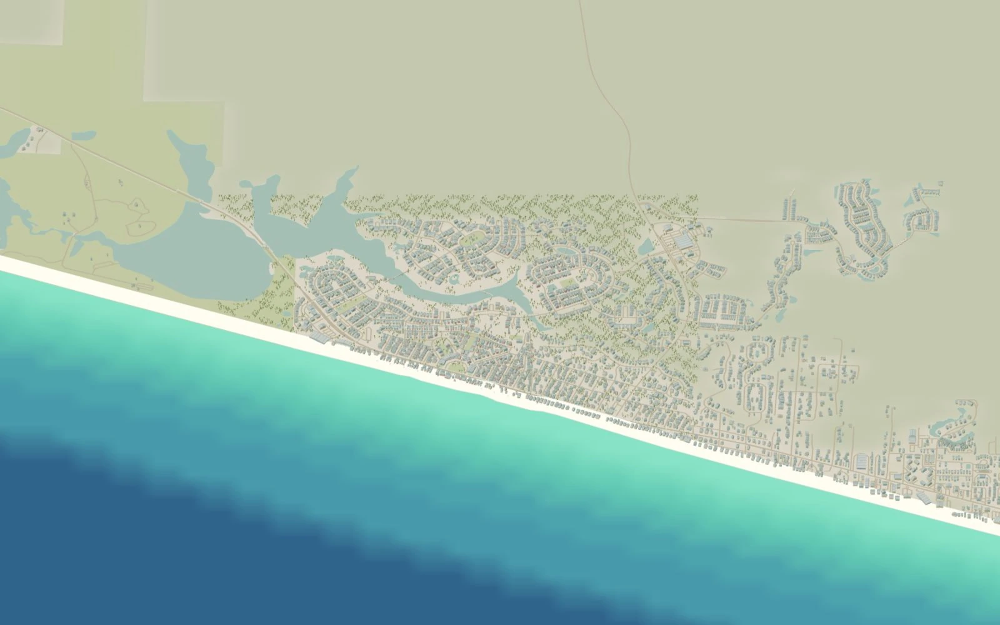
Town 5 km · water 39.25% · 2 callouts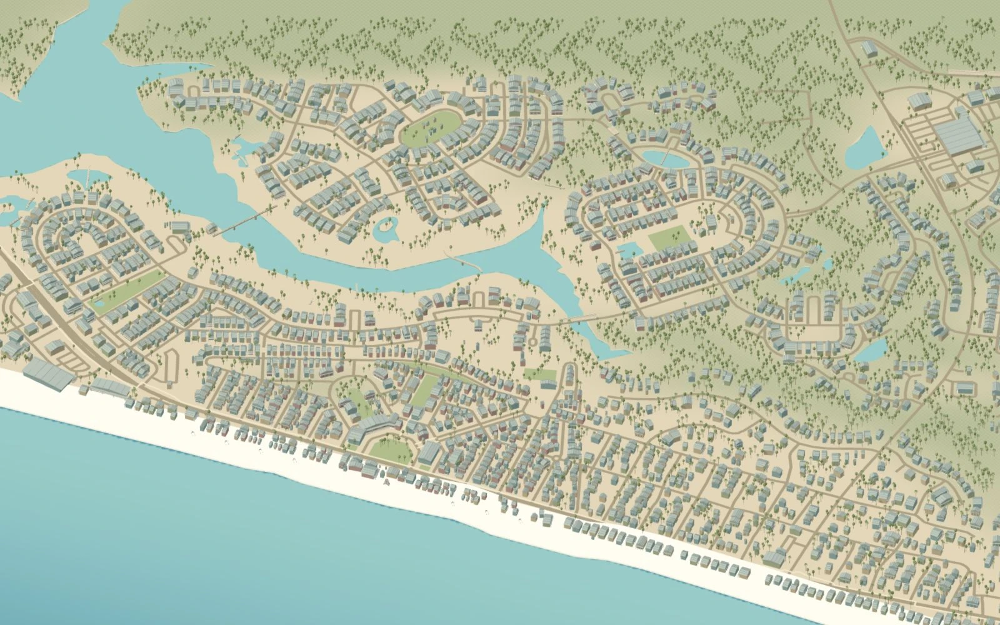
Close 2 km · water 21.37% · 2 calloutsstandard · hero in limits: True · zoom 2.5×
QA and phone numbers
{"town_span_km": 5.0, "close_span_km": 2.0, "zoom_ratio": 2.5, "water_pct_town": 39.25, "water_pct_close": 21.37, "hero_in_limits": true, "callouts_town": 2, "callouts_close": 2, "water_pct_town_mobile": 38.81, "water_pct_close_mobile": 18.39, "flags": [], "water_measurement": "Projected OSM land polygon fraction; sand included, before building occlusion", "land_source": "source-work/30a_finish/source/geometry.json", "hero_middle_fraction": 0.4, "callout_edge_margin_px": {"desktop": 128, "mobile": 64}}Town phone · Close phone
Dunedin
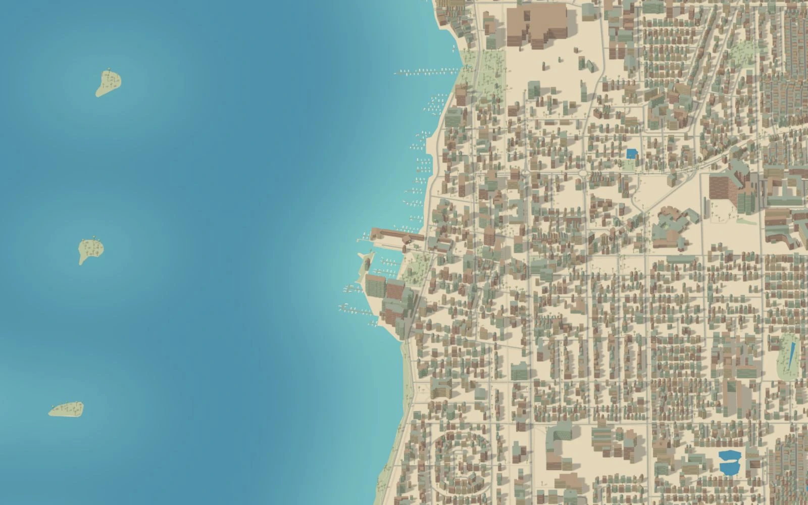
Town 5 km · water 43.44% · 3 callouts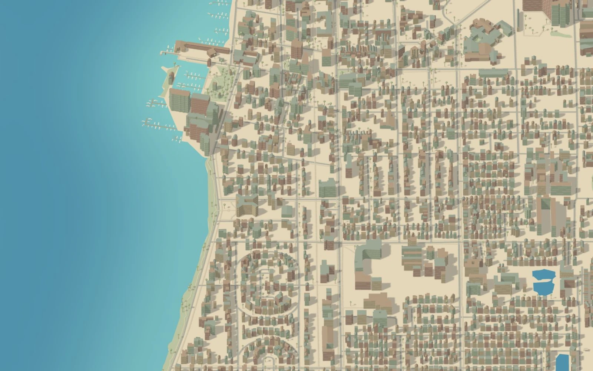
Close 2 km · water 33.34% · 3 calloutsstandard · hero in limits: True · zoom 2.5×
QA and phone numbers
{"town_span_km": 5.0, "close_span_km": 2.0, "zoom_ratio": 2.5, "water_pct_town": 43.44, "water_pct_close": 33.34, "hero_in_limits": true, "callouts_town": 3, "callouts_close": 3, "water_pct_town_mobile": 36.48, "water_pct_close_mobile": 16.0, "flags": [], "water_measurement": "Projected OSM land polygon fraction; sand included, before building occlusion", "land_source": "pipeline/work/coastal_pipeline/v4/st-pete-clearwater/land.json", "hero_middle_fraction": 0.4, "callout_edge_margin_px": {"desktop": 128, "mobile": 64}}Town phone · Close phone
Clearwater Beach
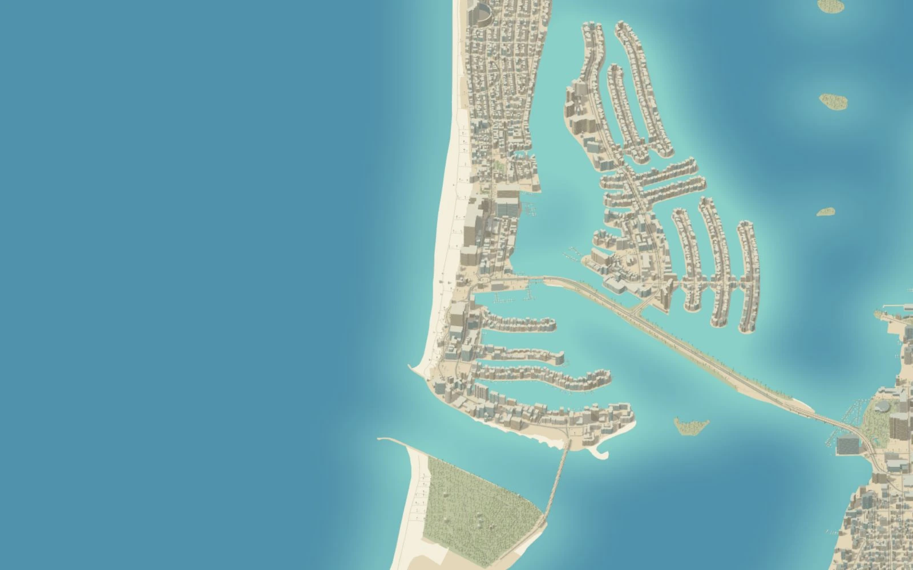
Town 5 km · water 79.26% · 4 callouts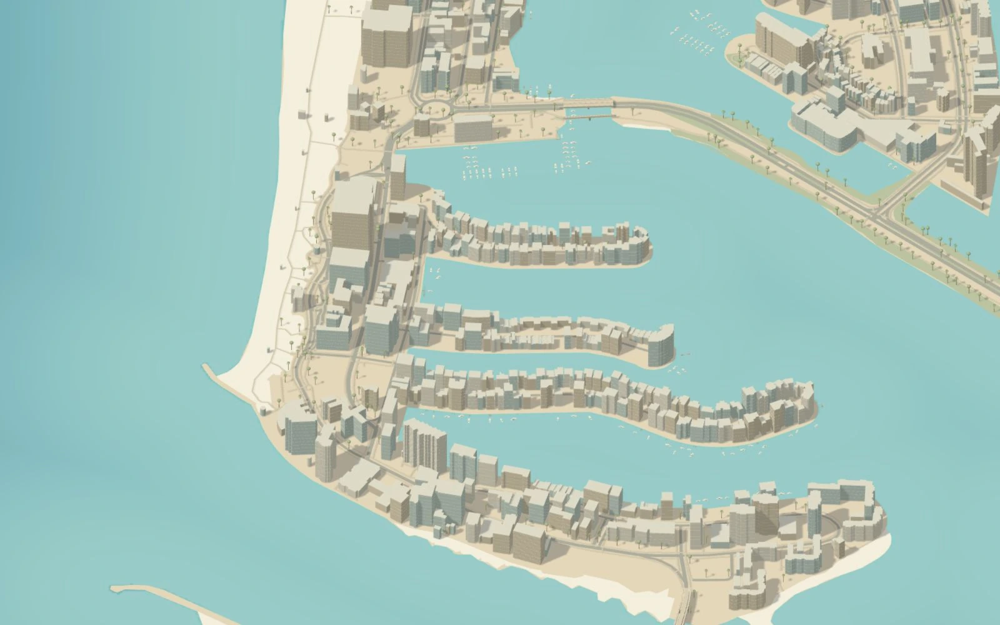
Close 2 km · water 65.11% · 1 calloutsnarrow_island · hero in limits: True · zoom 2.5×
town_land_shortfall, close_land_shortfall
QA and phone numbers
{"town_span_km": 5.0, "close_span_km": 2.0, "zoom_ratio": 2.5, "water_pct_town": 79.26, "water_pct_close": 65.11, "hero_in_limits": true, "callouts_town": 4, "callouts_close": 1, "water_pct_town_mobile": 69.35, "water_pct_close_mobile": 50.54, "flags": ["town_land_shortfall", "close_land_shortfall"], "water_measurement": "Projected OSM land polygon fraction; sand included, before building occlusion", "land_source": "pipeline/work/coastal_pipeline/v4/st-pete-clearwater/land.json", "hero_middle_fraction": 0.6, "callout_edge_margin_px": {"desktop": 128, "mobile": 64}}Town phone · Close phone
Gulfport
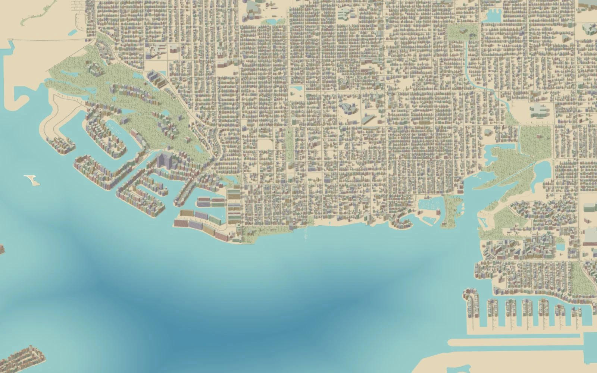
Town 5 km · water 40.1% · 3 callouts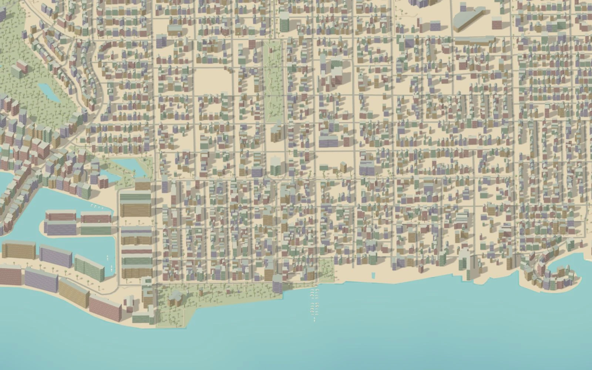
Close 2 km · water 23.48% · 3 calloutsstandard · hero in limits: True · zoom 2.5×
QA and phone numbers
{"town_span_km": 5.0, "close_span_km": 2.0, "zoom_ratio": 2.5, "water_pct_town": 40.1, "water_pct_close": 23.48, "hero_in_limits": true, "callouts_town": 3, "callouts_close": 3, "water_pct_town_mobile": 40.53, "water_pct_close_mobile": 20.1, "flags": [], "water_measurement": "Projected OSM land polygon fraction; sand included, before building occlusion", "land_source": "pipeline/work/coastal_pipeline/v4/st-pete-clearwater/land.json", "hero_middle_fraction": 0.4, "callout_edge_margin_px": {"desktop": 128, "mobile": 64}}Town phone · Close phone
Anna Maria Island
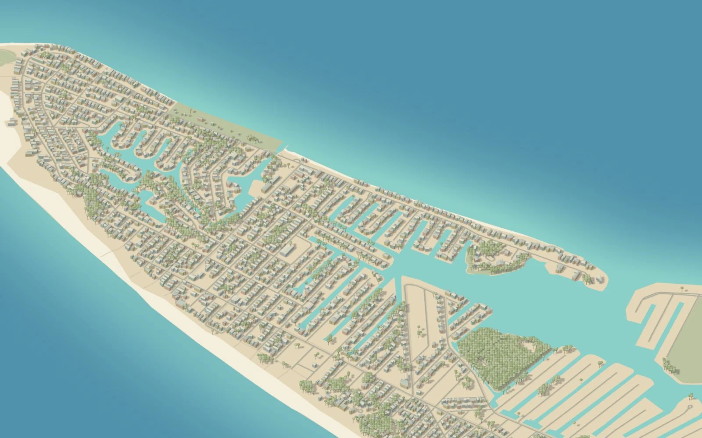
Town 5 km · water 78.3% · 2 callouts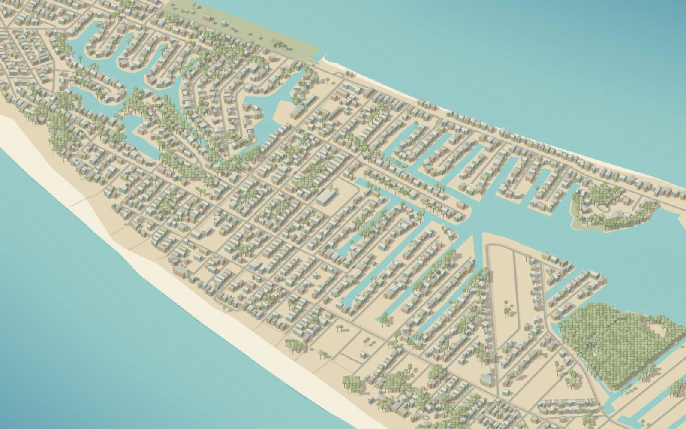
Close 2 km · water 42.52% · 1 calloutsnarrow_island · hero in limits: True · zoom 2.5×
town_land_shortfall
QA and phone numbers
{"town_span_km": 5.0, "close_span_km": 2.0, "zoom_ratio": 2.5, "water_pct_town": 78.3, "water_pct_close": 42.52, "hero_in_limits": true, "callouts_town": 2, "callouts_close": 1, "water_pct_town_mobile": 71.22, "water_pct_close_mobile": 30.07, "flags": ["town_land_shortfall"], "water_measurement": "Projected OSM land polygon fraction; sand included, before building occlusion", "land_source": "pipeline/work/coastal_pipeline/v4/sarasota-bradenton/land.json", "hero_middle_fraction": 0.6, "callout_edge_margin_px": {"desktop": 128, "mobile": 64}}Town phone · Close phone
Longboat Key
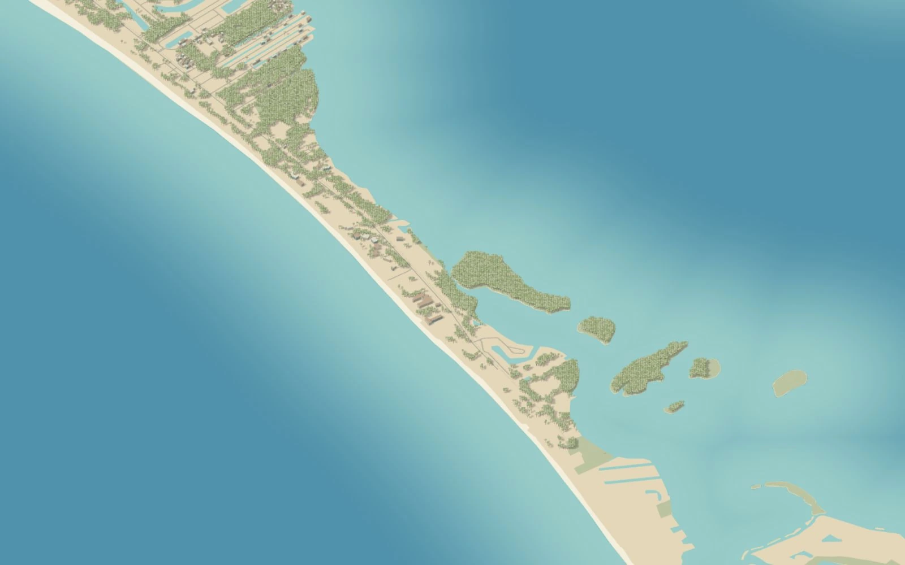
Town 5 km · water 86.54% · 2 callouts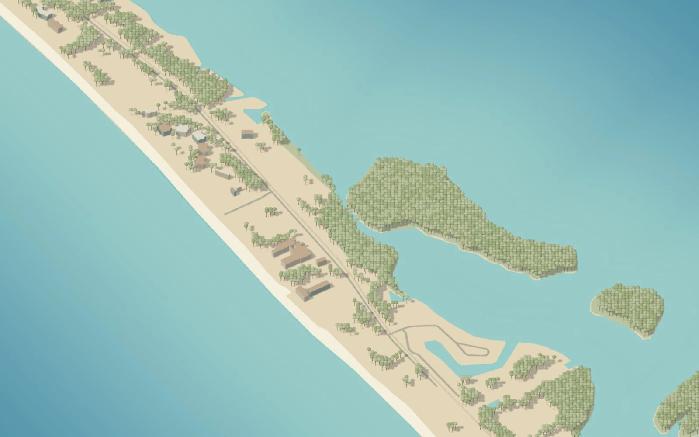
Close 2 km · water 72.41% · 1 calloutsnarrow_island · hero in limits: True · zoom 2.5×
town_land_shortfall, close_land_shortfall, town_mobile_land_shortfall
QA and phone numbers
{"town_span_km": 5.0, "close_span_km": 2.0, "zoom_ratio": 2.5, "water_pct_town": 86.54, "water_pct_close": 72.41, "hero_in_limits": true, "callouts_town": 2, "callouts_close": 1, "water_pct_town_mobile": 80.64, "water_pct_close_mobile": 62.67, "flags": ["town_land_shortfall", "close_land_shortfall", "town_mobile_land_shortfall"], "water_measurement": "Projected OSM land polygon fraction; sand included, before building occlusion", "land_source": "pipeline/work/coastal_pipeline/v4/sarasota-bradenton/land.json", "hero_middle_fraction": 0.6, "callout_edge_margin_px": {"desktop": 128, "mobile": 64}}Town phone · Close phone
Apollo Beach
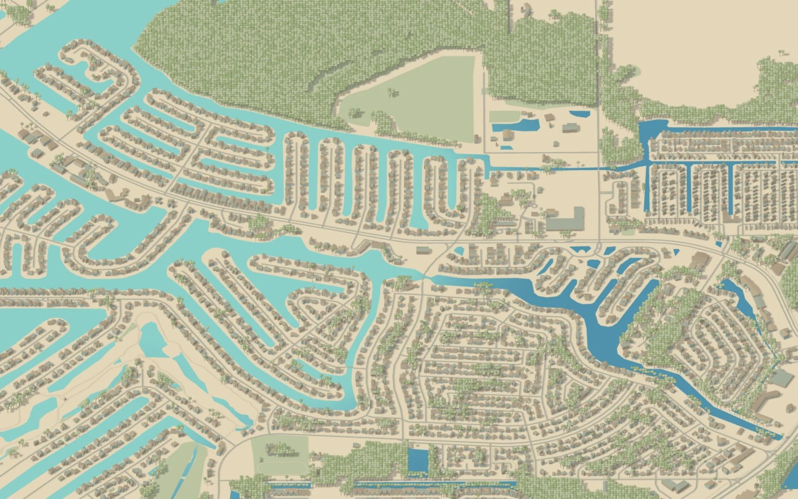
Town 5 km · water 44.45% · 2 callouts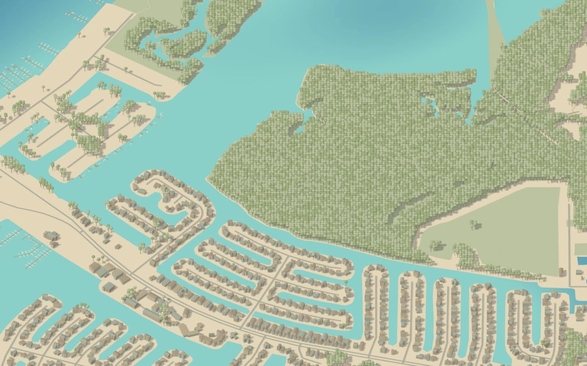
Close 2 km · water 34.27% · 1 calloutsstandard · hero in limits: True · zoom 2.5×
QA and phone numbers
{"town_span_km": 5.0, "close_span_km": 2.0, "zoom_ratio": 2.5, "water_pct_town": 44.45, "water_pct_close": 34.27, "hero_in_limits": true, "callouts_town": 2, "callouts_close": 1, "water_pct_town_mobile": 41.91, "water_pct_close_mobile": 37.49, "flags": [], "water_measurement": "Projected OSM land polygon fraction; sand included, before building occlusion", "land_source": "pipeline/work/coastal_pipeline/v4/tampa-south-shore/land.json", "hero_middle_fraction": 0.4, "callout_edge_margin_px": {"desktop": 128, "mobile": 64}}Town phone · Close phone
Clearwater
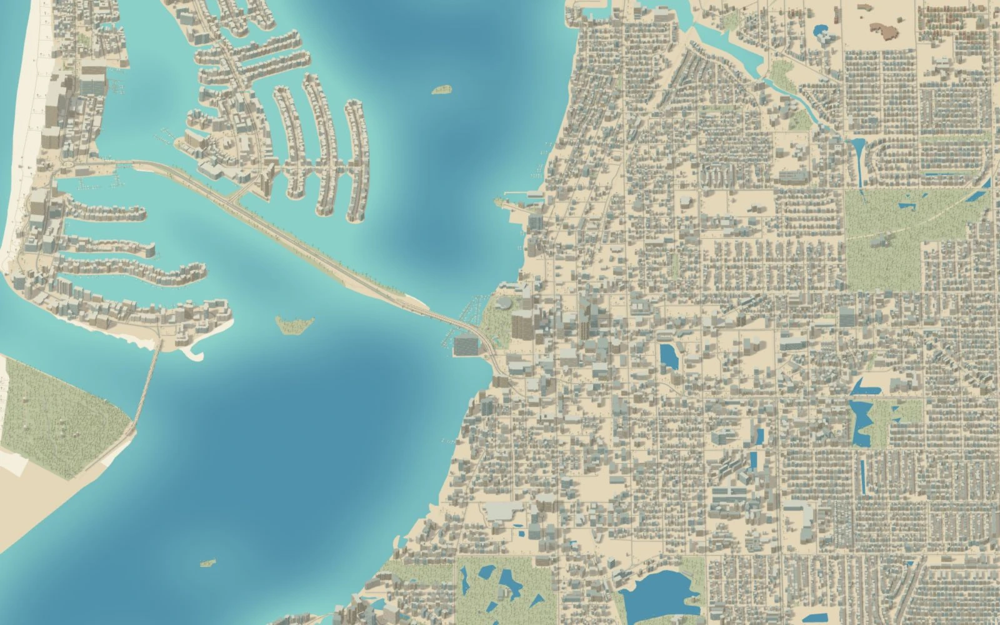
Town 5 km · water 37.11% · 3 callouts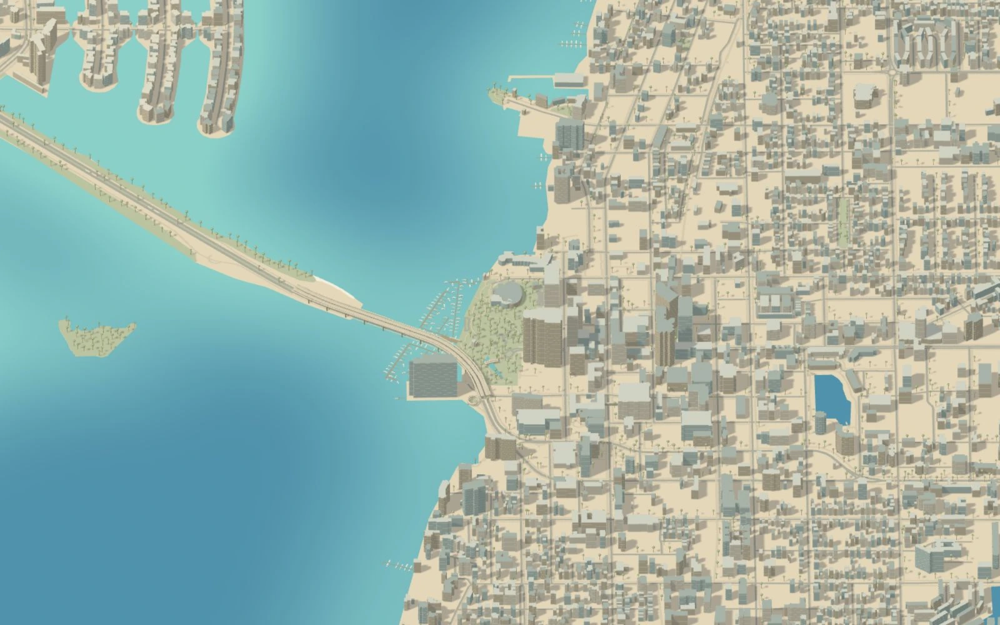
Close 2 km · water 31.65% · 3 calloutsstandard · hero in limits: True · zoom 2.5×
QA and phone numbers
{"town_span_km": 5.0, "close_span_km": 2.0, "zoom_ratio": 2.5, "water_pct_town": 37.11, "water_pct_close": 31.65, "hero_in_limits": true, "callouts_town": 3, "callouts_close": 3, "water_pct_town_mobile": 33.3, "water_pct_close_mobile": 15.13, "flags": [], "water_measurement": "Projected OSM land polygon fraction; sand included, before building occlusion", "land_source": "pipeline/work/coastal_pipeline/v4/st-pete-clearwater/land.json", "hero_middle_fraction": 0.4, "callout_edge_margin_px": {"desktop": 128, "mobile": 64}}Town phone · Close phone
Indian Rocks Beach
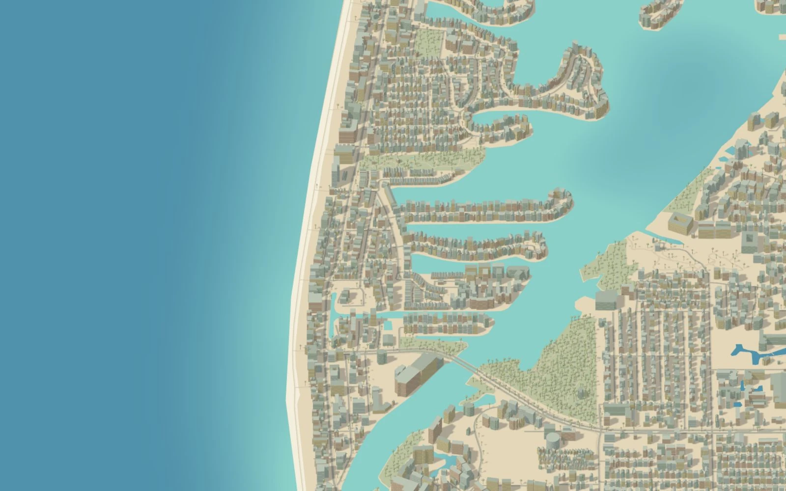
Town 5 km · water 50.78% · 3 callouts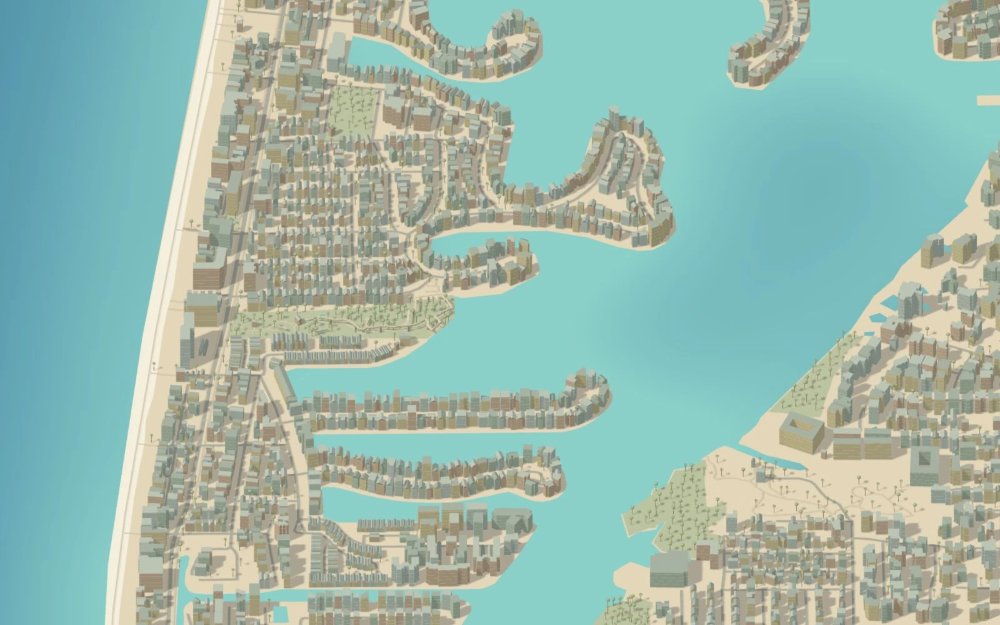
Close 2 km · water 49.79% · 2 calloutsnarrow_island · hero in limits: True · zoom 2.5×
QA and phone numbers
{"town_span_km": 5.0, "close_span_km": 2.0, "zoom_ratio": 2.5, "water_pct_town": 50.78, "water_pct_close": 49.79, "hero_in_limits": true, "callouts_town": 3, "callouts_close": 2, "water_pct_town_mobile": 48.67, "water_pct_close_mobile": 47.11, "flags": [], "water_measurement": "Projected OSM land polygon fraction; sand included, before building occlusion", "land_source": "pipeline/work/coastal_pipeline/v4/st-pete-clearwater/land.json", "hero_middle_fraction": 0.6, "callout_edge_margin_px": {"desktop": 128, "mobile": 64}}Town phone · Close phone
Madeira Beach
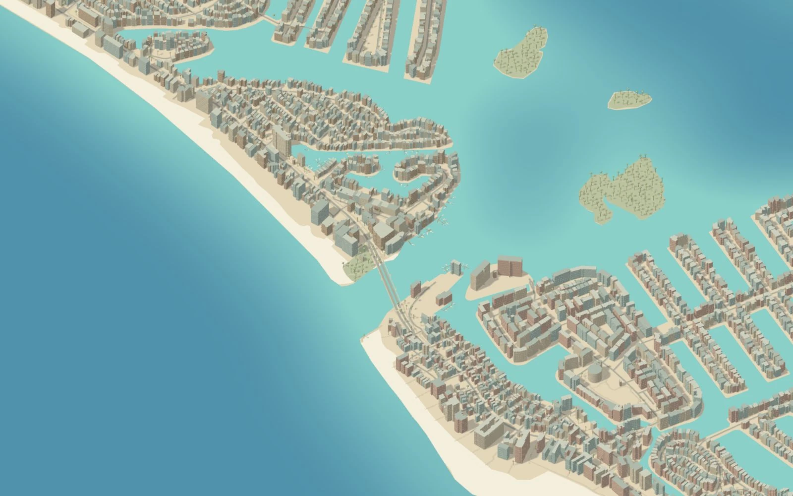
Town 5 km · water 72.15% · 3 calloutsClose 2 km · water 64.01% · 3 calloutsnarrow_island · hero in limits: True · zoom 2.5×
QA and phone numbers
{"town_span_km": 5.0, "close_span_km": 2.0, "zoom_ratio": 2.5, "water_pct_town": 72.15, "water_pct_close": 64.01, "hero_in_limits": true, "callouts_town": 3, "callouts_close": 3, "water_pct_town_mobile": 64.71, "water_pct_close_mobile": 63.06, "flags": [], "water_measurement": "Projected OSM land polygon fraction; sand included, before building occlusion", "land_source": "pipeline/work/coastal_pipeline/v4/st-pete-clearwater/land.json", "hero_middle_fraction": 0.6, "callout_edge_margin_px": {"desktop": 128, "mobile": 64}}Town phone · Close phone
New Port Richey
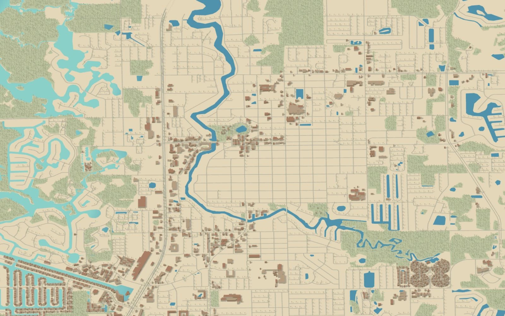
Town 5 km · water 8.45% · 3 callouts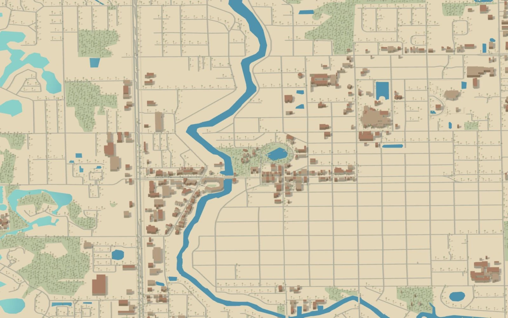
Close 2 km · water 4.55% · 3 calloutsstandard · hero in limits: True · zoom 2.5×
QA and phone numbers
{"town_span_km": 5.0, "close_span_km": 2.0, "zoom_ratio": 2.5, "water_pct_town": 8.45, "water_pct_close": 4.55, "hero_in_limits": true, "callouts_town": 3, "callouts_close": 3, "water_pct_town_mobile": 4.12, "water_pct_close_mobile": 5.43, "flags": [], "water_measurement": "Projected OSM land polygon fraction; sand included, before building occlusion", "land_source": "pipeline/work/coastal_pipeline/v4/st-pete-clearwater/land.json", "hero_middle_fraction": 0.4, "callout_edge_margin_px": {"desktop": 128, "mobile": 64}}Town phone · Close phone
Ruskin
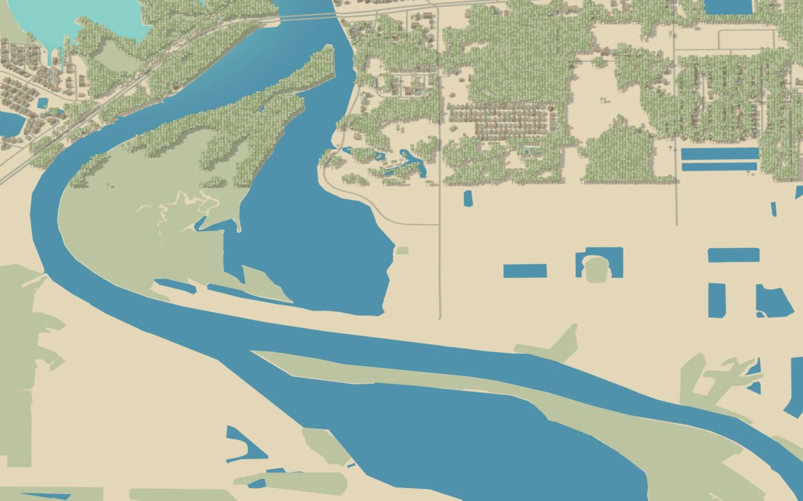
Town 5 km · water 17.1% · 2 callouts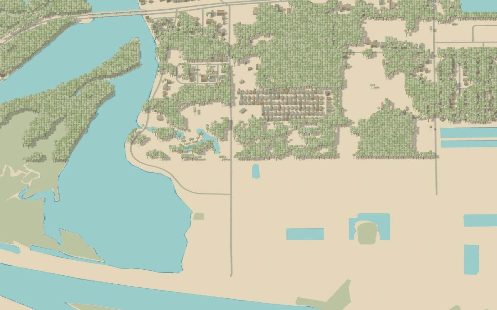
Close 2 km · water 23.26% · 2 calloutsstandard · hero in limits: True · zoom 2.5×
QA and phone numbers
{"town_span_km": 5.0, "close_span_km": 2.0, "zoom_ratio": 2.5, "water_pct_town": 17.1, "water_pct_close": 23.26, "hero_in_limits": true, "callouts_town": 2, "callouts_close": 2, "water_pct_town_mobile": 21.39, "water_pct_close_mobile": 16.51, "flags": [], "water_measurement": "Projected OSM land polygon fraction; sand included, before building occlusion", "land_source": "pipeline/work/coastal_pipeline/v4/tampa-south-shore/land.json", "hero_middle_fraction": 0.4, "callout_edge_margin_px": {"desktop": 128, "mobile": 64}}Town phone · Close phone
Safety Harbor
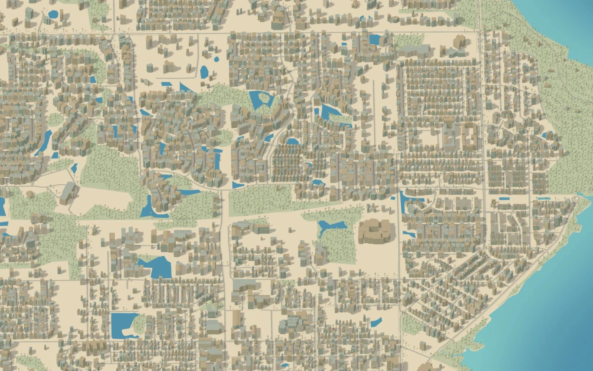
Town 5 km · water 43.57% · 3 callouts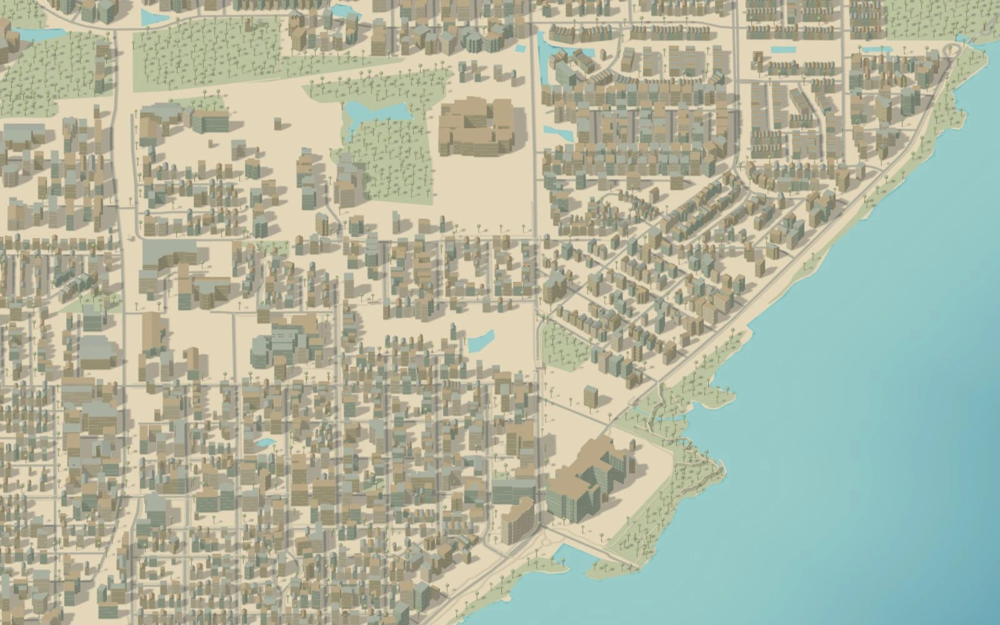
Close 2 km · water 22.19% · 2 calloutsstandard · hero in limits: True · zoom 2.5×
QA and phone numbers
{"town_span_km": 5.0, "close_span_km": 2.0, "zoom_ratio": 2.5, "water_pct_town": 43.57, "water_pct_close": 22.19, "hero_in_limits": true, "callouts_town": 3, "callouts_close": 2, "water_pct_town_mobile": 37.99, "water_pct_close_mobile": 9.8, "flags": [], "water_measurement": "Projected OSM land polygon fraction; sand included, before building occlusion", "land_source": "pipeline/work/coastal_pipeline/v4/st-pete-clearwater/land.json", "hero_middle_fraction": 0.4, "callout_edge_margin_px": {"desktop": 128, "mobile": 64}}Town phone · Close phone
St. Pete Beach
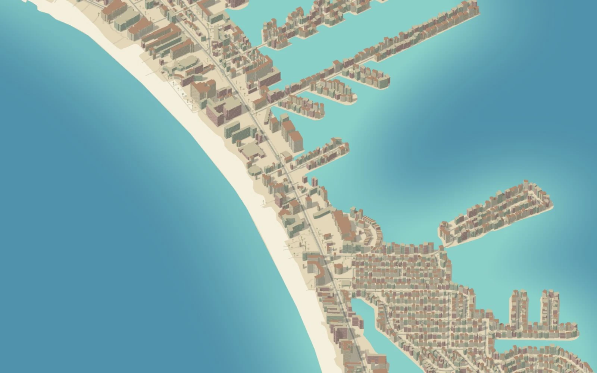
Town 5 km · water 76.79% · 3 callouts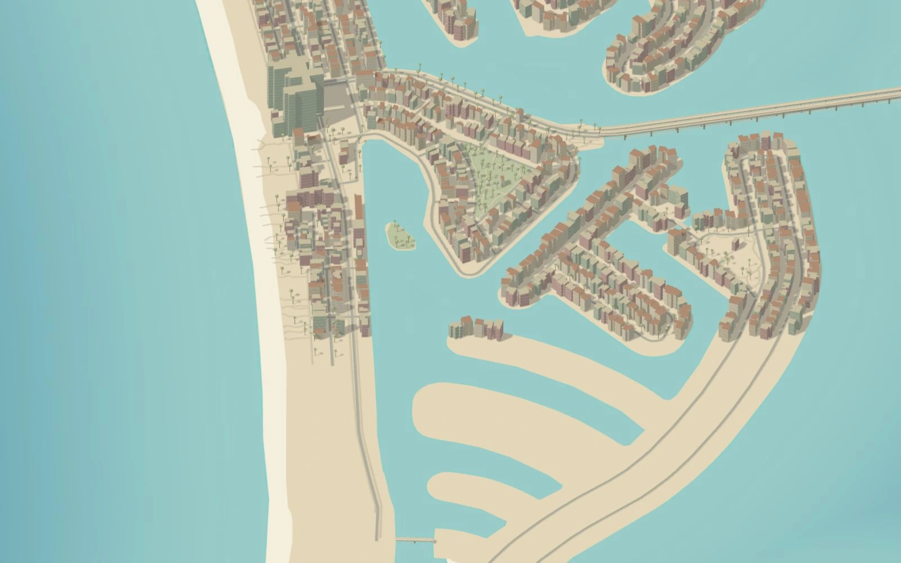
Close 2 km · water 61.19% · 1 calloutsnarrow_island · hero in limits: True · zoom 2.5×
town_land_shortfall
QA and phone numbers
{"town_span_km": 5.0, "close_span_km": 2.0, "zoom_ratio": 2.5, "water_pct_town": 76.79, "water_pct_close": 61.19, "hero_in_limits": true, "callouts_town": 3, "callouts_close": 1, "water_pct_town_mobile": 65.7, "water_pct_close_mobile": 36.77, "flags": ["town_land_shortfall"], "water_measurement": "Projected OSM land polygon fraction; sand included, before building occlusion", "land_source": "pipeline/work/coastal_pipeline/v4/st-pete-clearwater/land.json", "hero_middle_fraction": 0.6, "callout_edge_margin_px": {"desktop": 128, "mobile": 64}}Town phone · Close phone
St. Petersburg
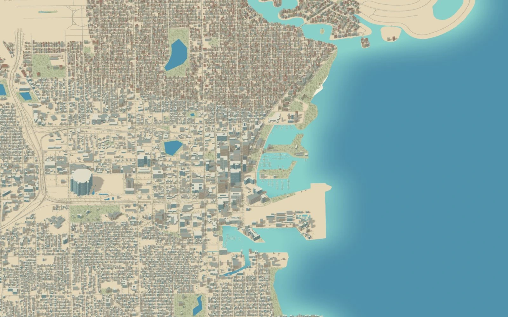
Town 7 km · water 36.39% · 4 callouts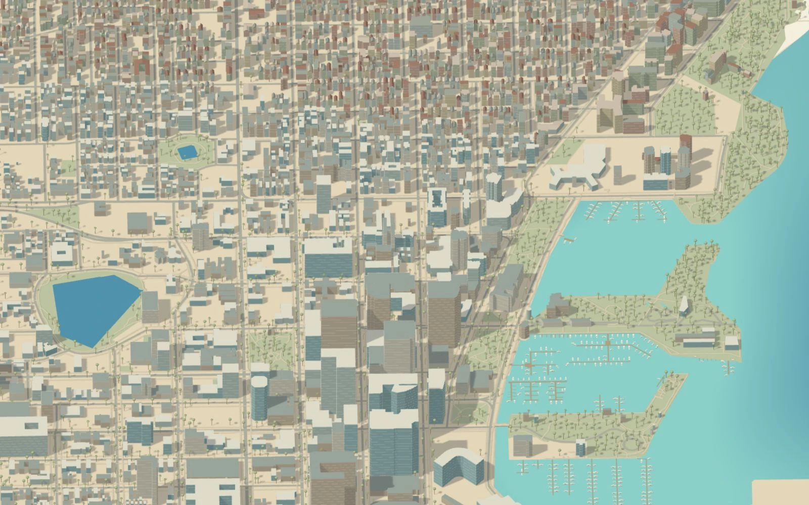
Close 2 km · water 19.14% · 3 calloutsstandard · hero in limits: True · zoom 3.5×
QA and phone numbers
{"town_span_km": 7.0, "close_span_km": 2.0, "zoom_ratio": 3.5, "water_pct_town": 36.39, "water_pct_close": 19.14, "hero_in_limits": true, "callouts_town": 4, "callouts_close": 3, "water_pct_town_mobile": 27.37, "water_pct_close_mobile": 9.12, "flags": [], "water_measurement": "Projected OSM land polygon fraction; sand included, before building occlusion", "land_source": "pipeline/work/coastal_pipeline/v4/st-pete-clearwater/land.json", "hero_middle_fraction": 0.4, "callout_edge_margin_px": {"desktop": 128, "mobile": 64}}Town phone · Close phone
Sun City Center
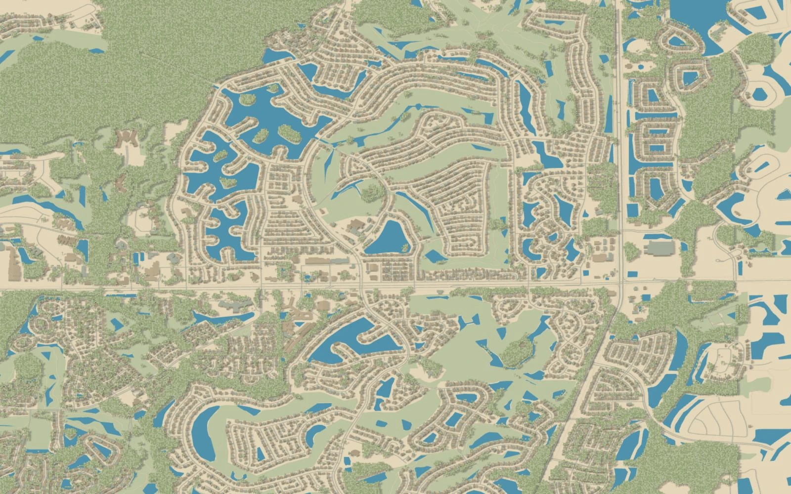
Town 5 km · water 10.29% · 2 callouts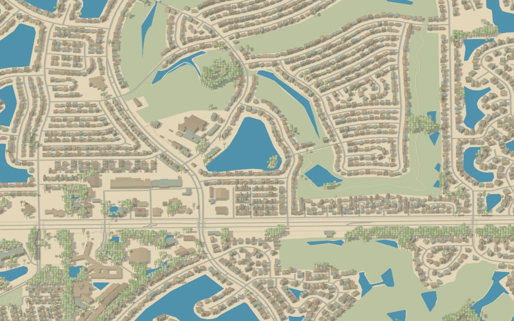
Close 2 km · water 9.41% · 1 calloutsstandard · hero in limits: True · zoom 2.5×
QA and phone numbers
{"town_span_km": 5.0, "close_span_km": 2.0, "zoom_ratio": 2.5, "water_pct_town": 10.29, "water_pct_close": 9.41, "hero_in_limits": true, "callouts_town": 2, "callouts_close": 1, "water_pct_town_mobile": 10.99, "water_pct_close_mobile": 9.18, "flags": [], "water_measurement": "Projected OSM land polygon fraction; sand included, before building occlusion", "land_source": "pipeline/work/coastal_pipeline/v4/tampa-south-shore/land.json", "hero_middle_fraction": 0.4, "callout_edge_margin_px": {"desktop": 128, "mobile": 64}}Town phone · Close phone
Tampa
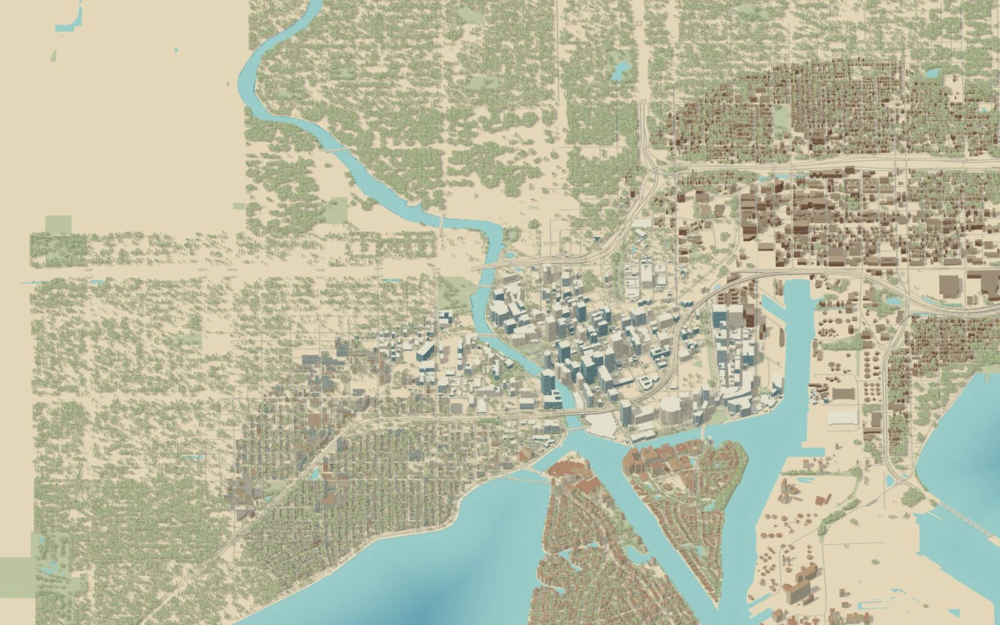
Town 7 km · water 11.5% · 3 callouts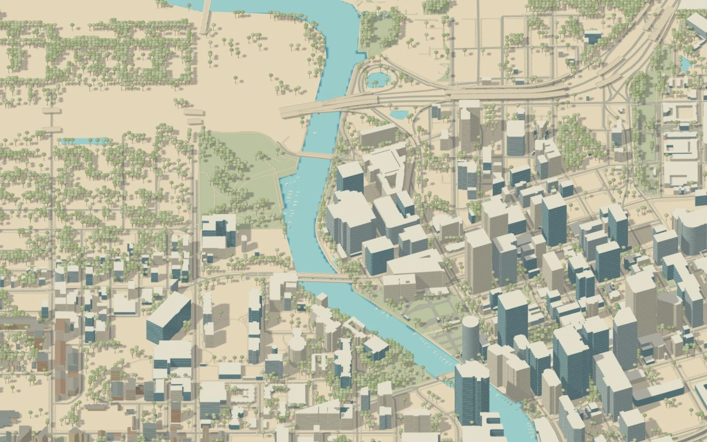
Close 2 km · water 6.55% · 3 calloutsstandard · hero in limits: True · zoom 3.5×
QA and phone numbers
{"town_span_km": 7.0, "close_span_km": 2.0, "zoom_ratio": 3.5, "water_pct_town": 11.5, "water_pct_close": 6.55, "hero_in_limits": true, "callouts_town": 3, "callouts_close": 3, "water_pct_town_mobile": 14.97, "water_pct_close_mobile": 12.63, "flags": [], "water_measurement": "Projected OSM land polygon fraction; sand included, before building occlusion", "land_source": "pipeline/work/coastal_pipeline/v4/tampa-south-shore/land.json", "hero_middle_fraction": 0.4, "callout_edge_margin_px": {"desktop": 128, "mobile": 64}}Town phone · Close phone
Tarpon Springs
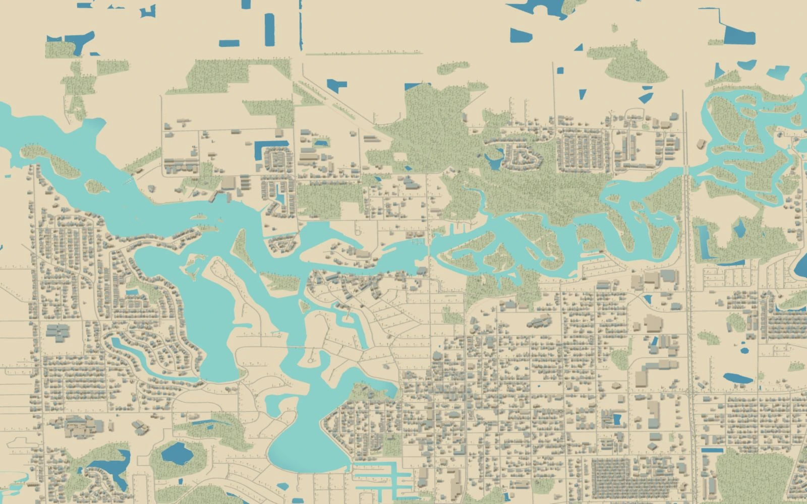
Town 5 km · water 13.83% · 3 callouts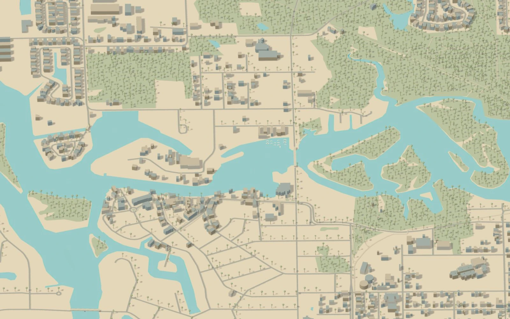
Close 2 km · water 19.21% · 3 calloutsstandard · hero in limits: True · zoom 2.5×
QA and phone numbers
{"town_span_km": 5.0, "close_span_km": 2.0, "zoom_ratio": 2.5, "water_pct_town": 13.83, "water_pct_close": 19.21, "hero_in_limits": true, "callouts_town": 3, "callouts_close": 3, "water_pct_town_mobile": 14.32, "water_pct_close_mobile": 12.68, "flags": [], "water_measurement": "Projected OSM land polygon fraction; sand included, before building occlusion", "land_source": "pipeline/work/coastal_pipeline/v4/st-pete-clearwater/land.json", "hero_middle_fraction": 0.4, "callout_edge_margin_px": {"desktop": 128, "mobile": 64}}Town phone · Close phone
Treasure Island
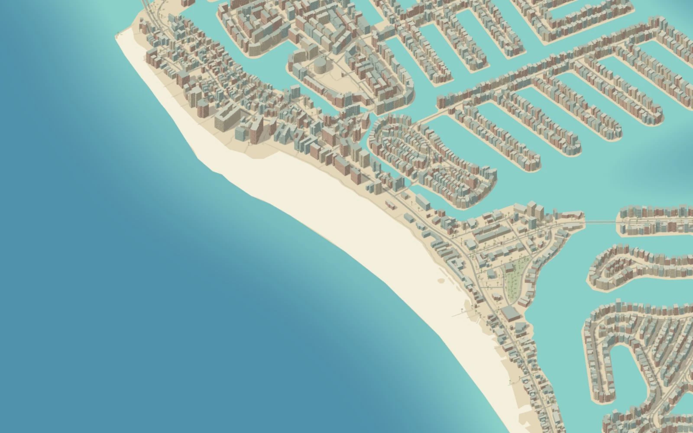
Town 5 km · water 68.86% · 2 callouts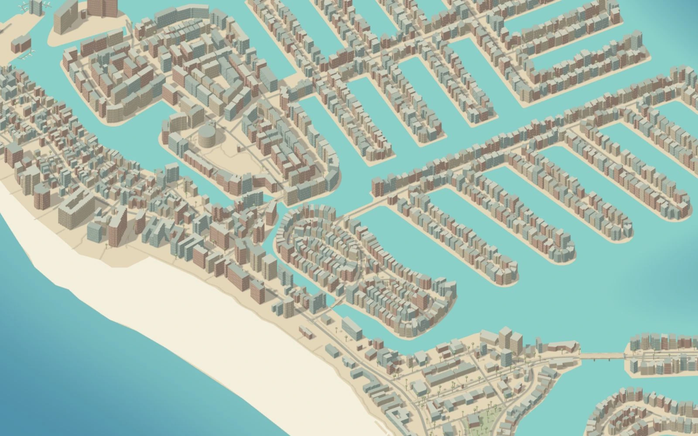
Close 2 km · water 40.81% · 2 calloutsnarrow_island · hero in limits: True · zoom 2.5×
QA and phone numbers
{"town_span_km": 5.0, "close_span_km": 2.0, "zoom_ratio": 2.5, "water_pct_town": 68.86, "water_pct_close": 40.81, "hero_in_limits": true, "callouts_town": 2, "callouts_close": 2, "water_pct_town_mobile": 66.76, "water_pct_close_mobile": 28.99, "flags": [], "water_measurement": "Projected OSM land polygon fraction; sand included, before building occlusion", "land_source": "pipeline/work/coastal_pipeline/v4/st-pete-clearwater/land.json", "hero_middle_fraction": 0.6, "callout_edge_margin_px": {"desktop": 128, "mobile": 64}}Town phone · Close phone
Bradenton
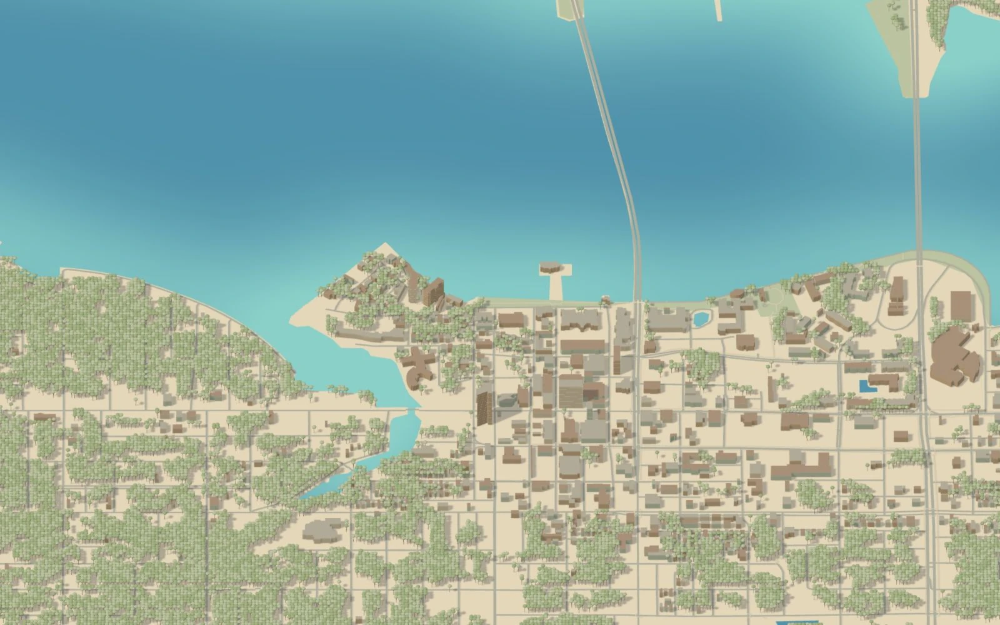
Town 5 km · water 31.44% · 3 callouts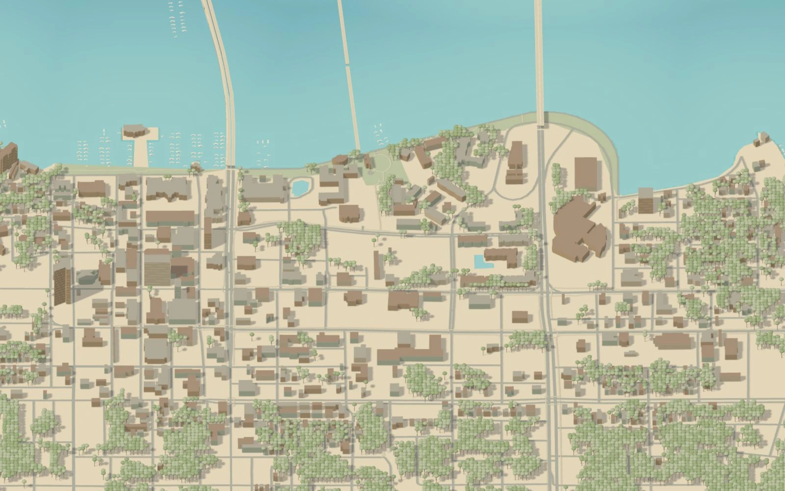
Close 2 km · water 31.7% · 2 calloutsstandard · hero in limits: True · zoom 2.5×
QA and phone numbers
{"town_span_km": 5.0, "close_span_km": 2.0, "zoom_ratio": 2.5, "water_pct_town": 31.44, "water_pct_close": 31.7, "hero_in_limits": true, "callouts_town": 3, "callouts_close": 2, "water_pct_town_mobile": 31.53, "water_pct_close_mobile": 29.66, "flags": [], "water_measurement": "Projected OSM land polygon fraction; sand included, before building occlusion", "land_source": "pipeline/work/coastal_pipeline/v4/sarasota-bradenton/land.json", "hero_middle_fraction": 0.4, "callout_edge_margin_px": {"desktop": 128, "mobile": 64}}Town phone · Close phone
Bradenton Beach
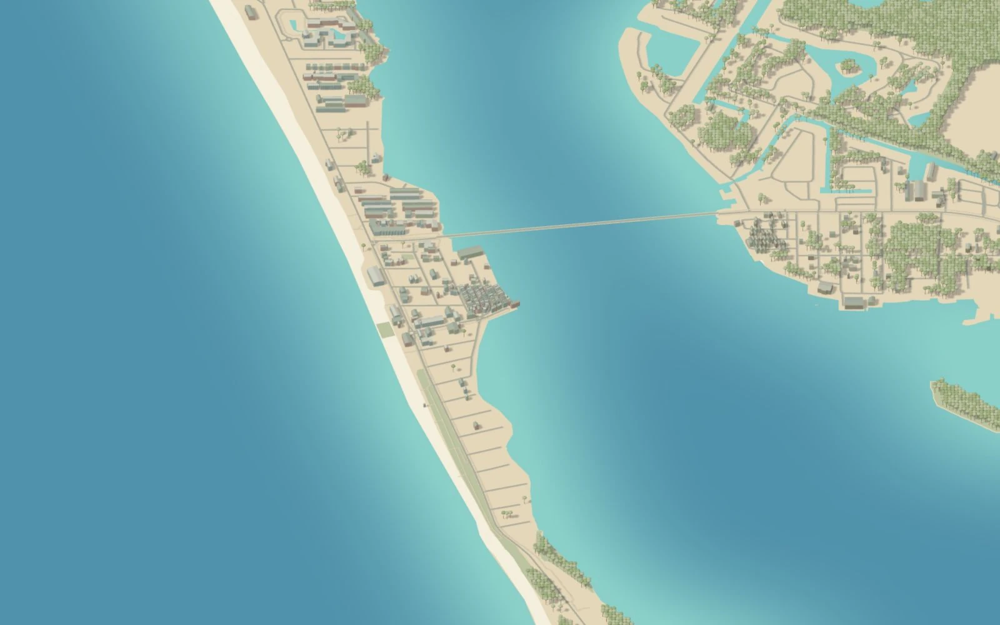
Town 5 km · water 75.7% · 2 callouts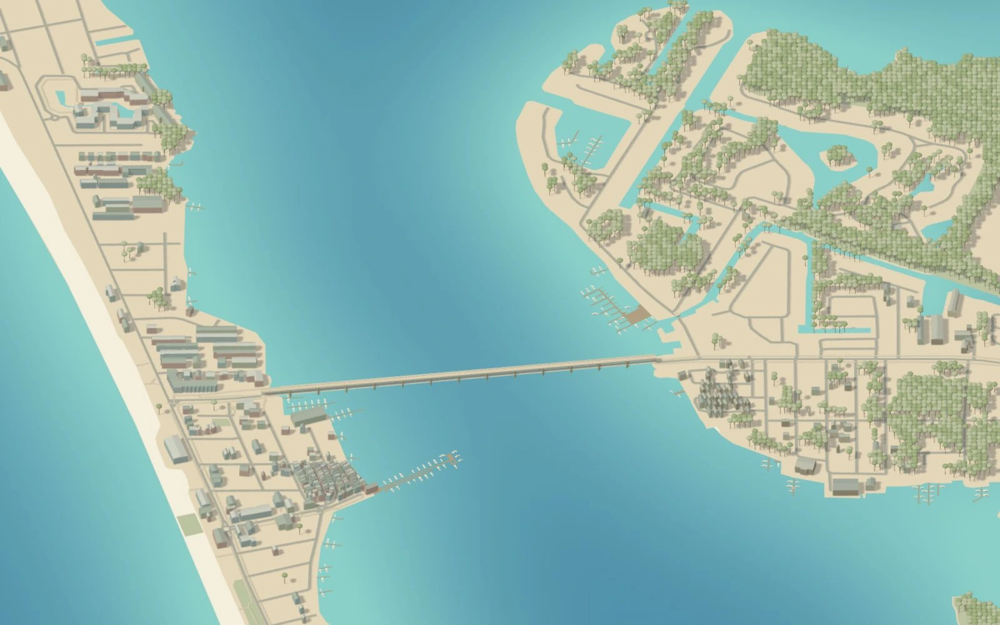
Close 2 km · water 60.53% · 1 calloutsnarrow_island · hero in limits: True · zoom 2.5×
town_land_shortfall, close_mobile_land_shortfall
QA and phone numbers
{"town_span_km": 5.0, "close_span_km": 2.0, "zoom_ratio": 2.5, "water_pct_town": 75.7, "water_pct_close": 60.53, "hero_in_limits": true, "callouts_town": 2, "callouts_close": 1, "water_pct_town_mobile": 73.6, "water_pct_close_mobile": 76.6, "flags": ["town_land_shortfall", "close_mobile_land_shortfall"], "water_measurement": "Projected OSM land polygon fraction; sand included, before building occlusion", "land_source": "pipeline/work/coastal_pipeline/v4/sarasota-bradenton/land.json", "hero_middle_fraction": 0.6, "callout_edge_margin_px": {"desktop": 128, "mobile": 64}}Town phone · Close phone
Cortez
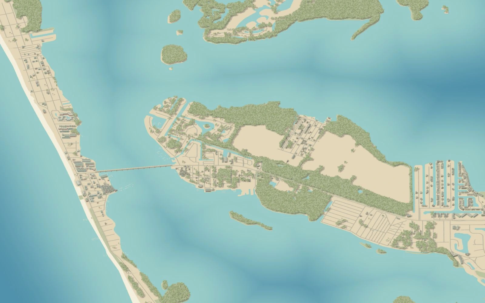
Town 5 km · water 69.58% · 3 callouts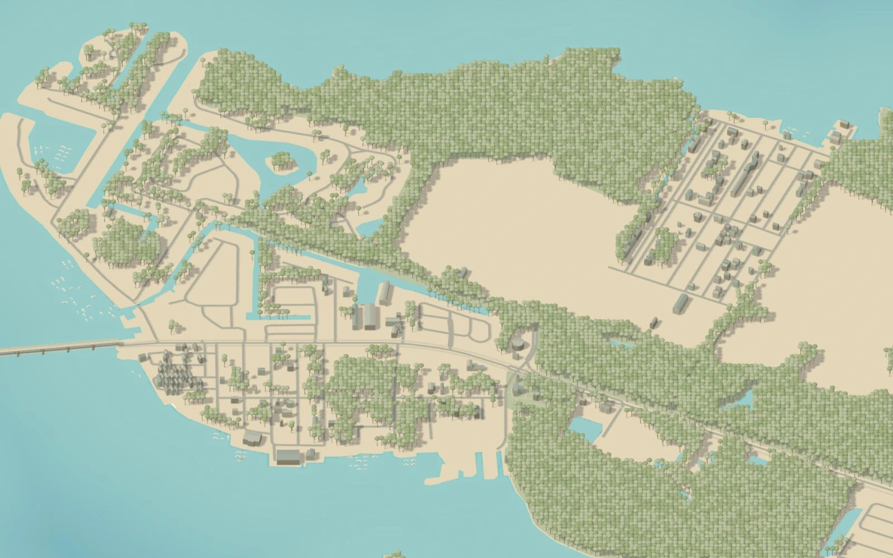
Close 2 km · water 35.29% · 3 calloutsnarrow_island · hero in limits: True · zoom 2.5×
QA and phone numbers
{"town_span_km": 5.0, "close_span_km": 2.0, "zoom_ratio": 2.5, "water_pct_town": 69.58, "water_pct_close": 35.29, "hero_in_limits": true, "callouts_town": 3, "callouts_close": 3, "water_pct_town_mobile": 66.05, "water_pct_close_mobile": 28.7, "flags": [], "water_measurement": "Projected OSM land polygon fraction; sand included, before building occlusion", "land_source": "pipeline/work/coastal_pipeline/v4/sarasota-bradenton/land.json", "hero_middle_fraction": 0.6, "callout_edge_margin_px": {"desktop": 128, "mobile": 64}}Town phone · Close phone
Englewood
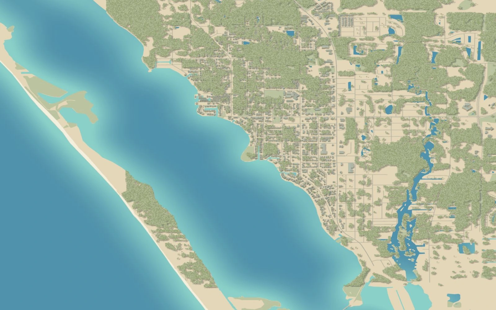
Town 5 km · water 40.51% · 2 callouts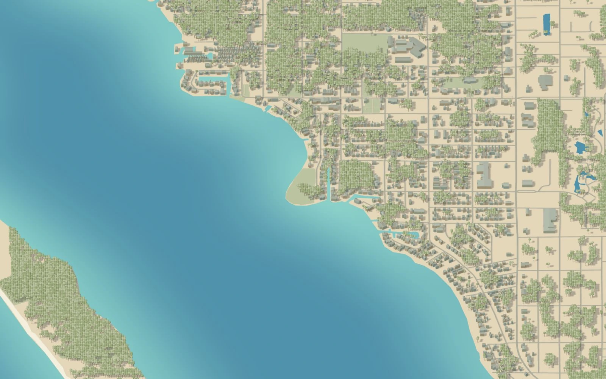
Close 2 km · water 33.32% · 2 calloutsstandard · hero in limits: True · zoom 2.5×
QA and phone numbers
{"town_span_km": 5.0, "close_span_km": 2.0, "zoom_ratio": 2.5, "water_pct_town": 40.51, "water_pct_close": 33.32, "hero_in_limits": true, "callouts_town": 2, "callouts_close": 2, "water_pct_town_mobile": 36.38, "water_pct_close_mobile": 26.2, "flags": [], "water_measurement": "Projected OSM land polygon fraction; sand included, before building occlusion", "land_source": "pipeline/work/coastal_pipeline/v4/sarasota-bradenton/land.json", "hero_middle_fraction": 0.4, "callout_edge_margin_px": {"desktop": 128, "mobile": 64}}Town phone · Close phone
Sarasota
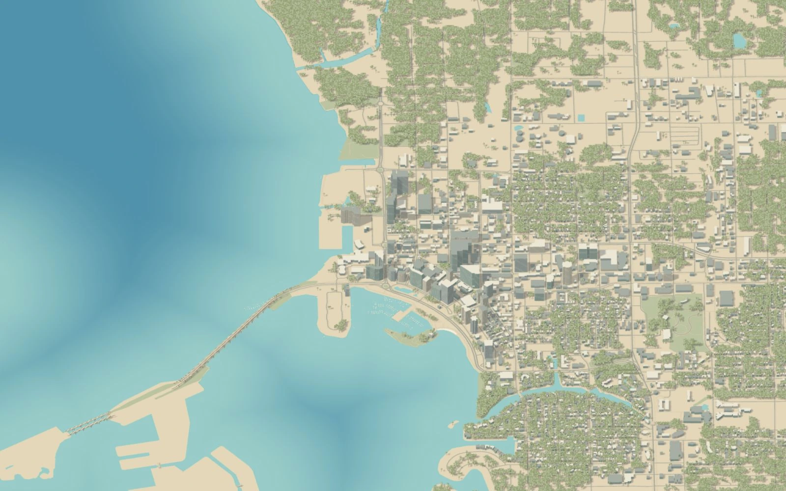
Town 5 km · water 44.94% · 3 callouts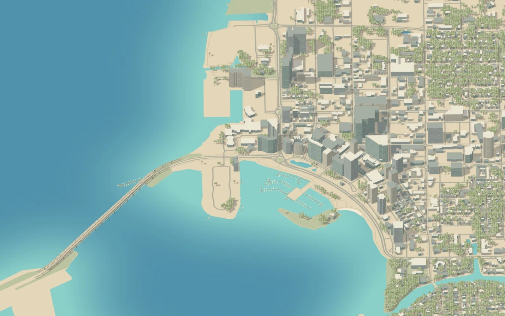
Close 2 km · water 33.75% · 3 calloutsstandard · hero in limits: True · zoom 2.5×
QA and phone numbers
{"town_span_km": 5.0, "close_span_km": 2.0, "zoom_ratio": 2.5, "water_pct_town": 44.94, "water_pct_close": 33.75, "hero_in_limits": true, "callouts_town": 3, "callouts_close": 3, "water_pct_town_mobile": 43.69, "water_pct_close_mobile": 19.29, "flags": [], "water_measurement": "Projected OSM land polygon fraction; sand included, before building occlusion", "land_source": "pipeline/work/coastal_pipeline/v4/sarasota-bradenton/land.json", "hero_middle_fraction": 0.4, "callout_edge_margin_px": {"desktop": 128, "mobile": 64}}Town phone · Close phone
Siesta Key
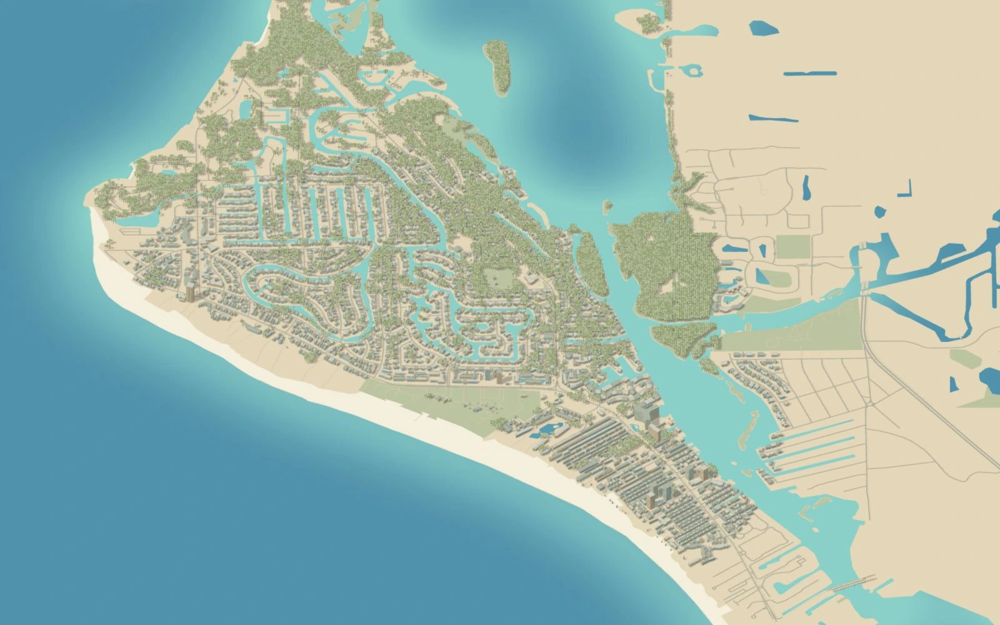
Town 5 km · water 46.18% · 3 callouts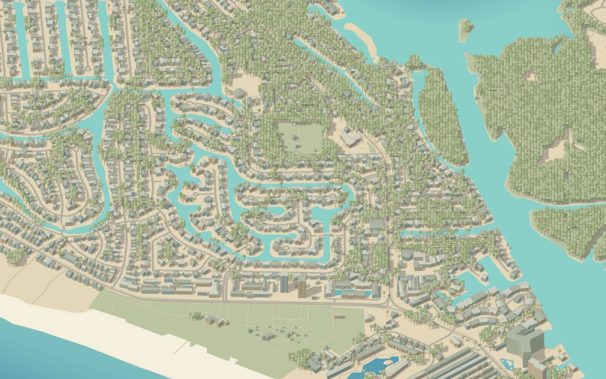
Close 2 km · water 21.47% · 2 calloutsnarrow_island · hero in limits: True · zoom 2.5×
QA and phone numbers
{"town_span_km": 5.0, "close_span_km": 2.0, "zoom_ratio": 2.5, "water_pct_town": 46.18, "water_pct_close": 21.47, "hero_in_limits": true, "callouts_town": 3, "callouts_close": 2, "water_pct_town_mobile": 45.9, "water_pct_close_mobile": 14.59, "flags": [], "water_measurement": "Projected OSM land polygon fraction; sand included, before building occlusion", "land_source": "pipeline/work/coastal_pipeline/v4/sarasota-bradenton/land.json", "hero_middle_fraction": 0.6, "callout_edge_margin_px": {"desktop": 128, "mobile": 64}}Town phone · Close phone
Venice
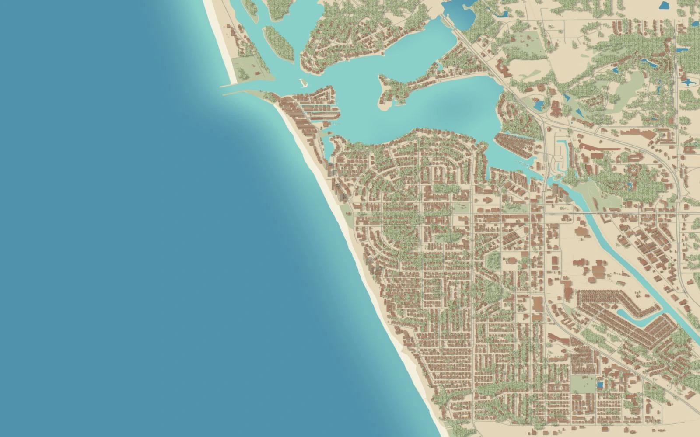
Town 5 km · water 44.58% · 3 calloutsClose 2 km · water 35.45% · 2 calloutsstandard · hero in limits: True · zoom 2.5×
QA and phone numbers
{"town_span_km": 5.0, "close_span_km": 2.0, "zoom_ratio": 2.5, "water_pct_town": 44.58, "water_pct_close": 35.45, "hero_in_limits": true, "callouts_town": 3, "callouts_close": 2, "water_pct_town_mobile": 39.16, "water_pct_close_mobile": 25.63, "flags": [], "water_measurement": "Projected OSM land polygon fraction; sand included, before building occlusion", "land_source": "pipeline/work/coastal_pipeline/v4/sarasota-bradenton/land.json", "hero_middle_fraction": 0.4, "callout_edge_margin_px": {"desktop": 128, "mobile": 64}}Town phone · Close phone
Miami
Town 7 km · water 40.18% · 4 calloutsClose 2 km · water 31.68% · 3 callouts
standard · hero in limits: True · zoom 3.5×
QA and phone numbers
{"town_span_km": 7.0, "close_span_km": 2.0, "zoom_ratio": 3.5, "water_pct_town": 40.18, "water_pct_close": 31.68, "hero_in_limits": true, "callouts_town": 4, "callouts_close": 3, "water_pct_town_mobile": 41.47, "water_pct_close_mobile": 27.99, "flags": [], "water_measurement": "Projected OSM land polygon fraction; sand included, before building occlusion", "land_source": "pipeline/work/coastal_pipeline/v3/miami/land-extended.json", "hero_middle_fraction": 0.4, "callout_edge_margin_px": {"desktop": 128, "mobile": 64}}Town phone · Close phone
Miami (South Beach)
Town 5 km · water 63.39% · 4 calloutsClose 2 km · water 23.28% · 3 callouts
narrow_island · hero in limits: True · zoom 2.5×
QA and phone numbers
{"town_span_km": 5.0, "close_span_km": 2.0, "zoom_ratio": 2.5, "water_pct_town": 63.39, "water_pct_close": 23.28, "hero_in_limits": true, "callouts_town": 4, "callouts_close": 3, "water_pct_town_mobile": 39.85, "water_pct_close_mobile": 0.85, "flags": [], "water_measurement": "Projected OSM land polygon fraction; sand included, before building occlusion", "land_source": "pipeline/work/coastal_pipeline/v3/miami/land-extended.json", "hero_middle_fraction": 0.6, "callout_edge_margin_px": {"desktop": 128, "mobile": 64}}Town phone · Close phone
Naples
Town 5 km · water 44.17% · 3 calloutsClose 2 km · water 20.34% · 2 callouts
standard · hero in limits: True · zoom 2.5×
QA and phone numbers
{"town_span_km": 5.0, "close_span_km": 2.0, "zoom_ratio": 2.5, "water_pct_town": 44.17, "water_pct_close": 20.34, "hero_in_limits": true, "callouts_town": 3, "callouts_close": 2, "water_pct_town_mobile": 32.21, "water_pct_close_mobile": 1.84, "flags": [], "water_measurement": "Projected OSM land polygon fraction; sand included, before building occlusion", "land_source": "pipeline/work/coastal_pipeline/v4/naples-marco/land.json", "hero_middle_fraction": 0.4, "callout_edge_margin_px": {"desktop": 128, "mobile": 64}}Town phone · Close phone
Marco Island
Town 5 km · water 57.91% · 3 calloutsClose 2 km · water 35.49% · 3 callouts
narrow_island · hero in limits: True · zoom 2.5×
QA and phone numbers
{"town_span_km": 5.0, "close_span_km": 2.0, "zoom_ratio": 2.5, "water_pct_town": 57.91, "water_pct_close": 35.49, "hero_in_limits": true, "callouts_town": 3, "callouts_close": 3, "water_pct_town_mobile": 52.51, "water_pct_close_mobile": 30.43, "flags": [], "water_measurement": "Projected OSM land polygon fraction; sand included, before building occlusion", "land_source": "pipeline/work/coastal_pipeline/v4/naples-marco/land.json", "hero_middle_fraction": 0.6, "callout_edge_margin_px": {"desktop": 128, "mobile": 64}}Town phone · Close phone
Everglades City
Town 5 km · water 25.97% · 2 calloutsClose 2 km · water 17.7% · 2 callouts
standard · hero in limits: True · zoom 2.5×
QA and phone numbers
{"town_span_km": 5.0, "close_span_km": 2.0, "zoom_ratio": 2.5, "water_pct_town": 25.97, "water_pct_close": 17.7, "hero_in_limits": true, "callouts_town": 2, "callouts_close": 2, "water_pct_town_mobile": 23.26, "water_pct_close_mobile": 25.85, "flags": [], "water_measurement": "Projected OSM land polygon fraction; sand included, before building occlusion", "land_source": "pipeline/work/coastal_pipeline/v4/naples-marco/land.json", "hero_middle_fraction": 0.4, "callout_edge_margin_px": {"desktop": 128, "mobile": 64}}Town phone · Close phone
Chokoloskee
Town 5 km · water 63.58% · 2 calloutsClose 2 km · water 79.72% · 2 callouts
narrow_island · hero in limits: True · zoom 2.5×
close_land_shortfall, close_mobile_land_shortfall
QA and phone numbers
{"town_span_km": 5.0, "close_span_km": 2.0, "zoom_ratio": 2.5, "water_pct_town": 63.58, "water_pct_close": 79.72, "hero_in_limits": true, "callouts_town": 2, "callouts_close": 2, "water_pct_town_mobile": 71.96, "water_pct_close_mobile": 69.17, "flags": ["close_land_shortfall", "close_mobile_land_shortfall"], "water_measurement": "Projected OSM land polygon fraction; sand included, before building occlusion", "land_source": "pipeline/work/coastal_pipeline/v4/naples-marco/land.json", "hero_middle_fraction": 0.6, "callout_edge_margin_px": {"desktop": 128, "mobile": 64}}Town phone · Close phone
Pensacola
Town 5 km · water 42.06% · 3 calloutsClose 2 km · water 16.62% · 2 callouts
standard · hero in limits: True · zoom 2.5×
QA and phone numbers
{"town_span_km": 5.0, "close_span_km": 2.0, "zoom_ratio": 2.5, "water_pct_town": 42.06, "water_pct_close": 16.62, "hero_in_limits": true, "callouts_town": 3, "callouts_close": 2, "water_pct_town_mobile": 37.3, "water_pct_close_mobile": 20.51, "flags": [], "water_measurement": "Projected OSM land polygon fraction; sand included, before building occlusion", "land_source": "pipeline/work/coastal_pipeline/v4/pensacola/land.json", "hero_middle_fraction": 0.4, "callout_edge_margin_px": {"desktop": 128, "mobile": 64}}Town phone · Close phone
Jacksonville
Town 7 km · water 25.74% · 4 calloutsClose 2 km · water 34.1% · 3 callouts
standard · hero in limits: True · zoom 3.5×
QA and phone numbers
{"town_span_km": 7.0, "close_span_km": 2.0, "zoom_ratio": 3.5, "water_pct_town": 25.74, "water_pct_close": 34.1, "hero_in_limits": true, "callouts_town": 4, "callouts_close": 3, "water_pct_town_mobile": 26.4, "water_pct_close_mobile": 26.96, "flags": [], "water_measurement": "Projected OSM land polygon fraction; sand included, before building occlusion", "land_source": "pipeline/work/coastal_pipeline/v4/jacksonville/land.json", "hero_middle_fraction": 0.4, "callout_edge_margin_px": {"desktop": 128, "mobile": 64}}Town phone · Close phone
Pensacola Beach
Town 5 km · water 86.26% · 2 calloutsClose 2 km · water 68.19% · 1 callouts
narrow_island · hero in limits: True · zoom 2.5×
town_land_shortfall, close_land_shortfall, town_mobile_land_shortfall, close_mobile_land_shortfall
QA and phone numbers
{"town_span_km": 5.0, "close_span_km": 2.0, "zoom_ratio": 2.5, "water_pct_town": 86.26, "water_pct_close": 68.19, "hero_in_limits": true, "callouts_town": 2, "callouts_close": 1, "water_pct_town_mobile": 85.79, "water_pct_close_mobile": 66.0, "flags": ["town_land_shortfall", "close_land_shortfall", "town_mobile_land_shortfall", "close_mobile_land_shortfall"], "water_measurement": "Projected OSM land polygon fraction; sand included, before building occlusion", "land_source": "pipeline/work/coastal_pipeline/v4/pensacola-beach/land.json", "hero_middle_fraction": 0.6, "callout_edge_margin_px": {"desktop": 128, "mobile": 64}}Town phone · Close phone
Panama City
Town 5 km · water 38.2% · 2 calloutsClose 2 km · water 28.43% · 2 callouts
standard · hero in limits: True · zoom 2.5×
QA and phone numbers
{"town_span_km": 5.0, "close_span_km": 2.0, "zoom_ratio": 2.5, "water_pct_town": 38.2, "water_pct_close": 28.43, "hero_in_limits": true, "callouts_town": 2, "callouts_close": 2, "water_pct_town_mobile": 35.29, "water_pct_close_mobile": 20.32, "flags": [], "water_measurement": "Projected OSM land polygon fraction; sand included, before building occlusion", "land_source": "pipeline/work/coastal_pipeline/v4/panama-city/land.json", "hero_middle_fraction": 0.4, "callout_edge_margin_px": {"desktop": 128, "mobile": 64}}Town phone · Close phone
Panama City Beach
Town 5 km · water 38.86% · 2 calloutsClose 2 km · water 27.28% · 2 callouts
standard · hero in limits: True · zoom 2.5×
QA and phone numbers
{"town_span_km": 5.0, "close_span_km": 2.0, "zoom_ratio": 2.5, "water_pct_town": 38.86, "water_pct_close": 27.28, "hero_in_limits": true, "callouts_town": 2, "callouts_close": 2, "water_pct_town_mobile": 39.95, "water_pct_close_mobile": 23.15, "flags": [], "water_measurement": "Projected OSM land polygon fraction; sand included, before building occlusion", "land_source": "pipeline/work/coastal_pipeline/v4/pcb/land.json", "hero_middle_fraction": 0.4, "callout_edge_margin_px": {"desktop": 128, "mobile": 64}}Town phone · Close phone
Destin
Town 5 km · water 61.27% · 3 calloutsClose 2 km · water 37.13% · 2 callouts
narrow_island · hero in limits: True · zoom 2.5×
QA and phone numbers
{"town_span_km": 5.0, "close_span_km": 2.0, "zoom_ratio": 2.5, "water_pct_town": 61.27, "water_pct_close": 37.13, "hero_in_limits": true, "callouts_town": 3, "callouts_close": 2, "water_pct_town_mobile": 62.73, "water_pct_close_mobile": 26.74, "flags": [], "water_measurement": "Projected OSM land polygon fraction; sand included, before building occlusion", "land_source": "pipeline/work/coastal_pipeline/v4/destin/land.json", "hero_middle_fraction": 0.6, "callout_edge_margin_px": {"desktop": 128, "mobile": 64}}Town phone · Close phone
Port St. Joe
Town 5 km · water 43.16% · 2 calloutsClose 2 km · water 23.36% · 2 callouts
standard · hero in limits: True · zoom 2.5×
QA and phone numbers
{"town_span_km": 5.0, "close_span_km": 2.0, "zoom_ratio": 2.5, "water_pct_town": 43.16, "water_pct_close": 23.36, "hero_in_limits": true, "callouts_town": 2, "callouts_close": 2, "water_pct_town_mobile": 35.7, "water_pct_close_mobile": 14.9, "flags": [], "water_measurement": "Projected OSM land polygon fraction; sand included, before building occlusion", "land_source": "pipeline/work/coastal_pipeline/v4/port-st-joe/land.json", "hero_middle_fraction": 0.4, "callout_edge_margin_px": {"desktop": 128, "mobile": 64}}Town phone · Close phone
Apalachicola
Town 5 km · water 44.13% · 3 calloutsClose 2 km · water 37.98% · 3 callouts
standard · hero in limits: True · zoom 2.5×
QA and phone numbers
{"town_span_km": 5.0, "close_span_km": 2.0, "zoom_ratio": 2.5, "water_pct_town": 44.13, "water_pct_close": 37.98, "hero_in_limits": true, "callouts_town": 3, "callouts_close": 3, "water_pct_town_mobile": 43.24, "water_pct_close_mobile": 37.89, "flags": [], "water_measurement": "Projected OSM land polygon fraction; sand included, before building occlusion", "land_source": "pipeline/work/coastal_pipeline/v4/apalachicola/land.json", "hero_middle_fraction": 0.4, "callout_edge_margin_px": {"desktop": 128, "mobile": 64}}Town phone · Close phone
St. George Island
Town 5 km · water 83.72% · 2 calloutsClose 2 km · water 64.93% · 2 callouts
narrow_island · hero in limits: True · zoom 2.5×
town_land_shortfall, town_mobile_land_shortfall
QA and phone numbers
{"town_span_km": 5.0, "close_span_km": 2.0, "zoom_ratio": 2.5, "water_pct_town": 83.72, "water_pct_close": 64.93, "hero_in_limits": true, "callouts_town": 2, "callouts_close": 2, "water_pct_town_mobile": 83.23, "water_pct_close_mobile": 61.04, "flags": ["town_land_shortfall", "town_mobile_land_shortfall"], "water_measurement": "Projected OSM land polygon fraction; sand included, before building occlusion", "land_source": "pipeline/work/coastal_pipeline/v4/st-george-island/land.json", "hero_middle_fraction": 0.6, "callout_edge_margin_px": {"desktop": 128, "mobile": 64}}Town phone · Close phone
Carrabelle
Town 5 km · water 31.83% · 4 calloutsClose 2 km · water 17.74% · 2 callouts
standard · hero in limits: True · zoom 2.5×
QA and phone numbers
{"town_span_km": 5.0, "close_span_km": 2.0, "zoom_ratio": 2.5, "water_pct_town": 31.83, "water_pct_close": 17.74, "hero_in_limits": true, "callouts_town": 4, "callouts_close": 2, "water_pct_town_mobile": 31.11, "water_pct_close_mobile": 16.76, "flags": [], "water_measurement": "Projected OSM land polygon fraction; sand included, before building occlusion", "land_source": "pipeline/work/coastal_pipeline/v4/carrabelle/land.json", "hero_middle_fraction": 0.4, "callout_edge_margin_px": {"desktop": 128, "mobile": 64}}Town phone · Close phone
St. Marks
Town 5 km · water 8.87% · 2 calloutsClose 2 km · water 23.39% · 2 callouts
standard · hero in limits: True · zoom 2.5×
QA and phone numbers
{"town_span_km": 5.0, "close_span_km": 2.0, "zoom_ratio": 2.5, "water_pct_town": 8.87, "water_pct_close": 23.39, "hero_in_limits": true, "callouts_town": 2, "callouts_close": 2, "water_pct_town_mobile": 12.31, "water_pct_close_mobile": 9.93, "flags": [], "water_measurement": "Projected OSM land polygon fraction; sand included, before building occlusion", "land_source": "pipeline/work/coastal_pipeline/v4/st-marks/land.json", "hero_middle_fraction": 0.4, "callout_edge_margin_px": {"desktop": 128, "mobile": 64}}Town phone · Close phone
St. Teresa
Town 5 km · water 35.15% · 2 calloutsClose 2 km · water 19.97% · 2 callouts
standard · hero in limits: True · zoom 2.5×
QA and phone numbers
{"town_span_km": 5.0, "close_span_km": 2.0, "zoom_ratio": 2.5, "water_pct_town": 35.15, "water_pct_close": 19.97, "hero_in_limits": true, "callouts_town": 2, "callouts_close": 2, "water_pct_town_mobile": 37.46, "water_pct_close_mobile": 22.65, "flags": [], "water_measurement": "Projected OSM land polygon fraction; sand included, before building occlusion", "land_source": "pipeline/work/coastal_pipeline/v4/st-teresa/land.json", "hero_middle_fraction": 0.4, "callout_edge_margin_px": {"desktop": 128, "mobile": 64}}Town phone · Close phone
Mexico Beach
Town 5 km · water 27.26% · 2 calloutsClose 2 km · water 8.58% · 1 callouts
standard · hero in limits: True · zoom 2.5×
QA and phone numbers
{"town_span_km": 5.0, "close_span_km": 2.0, "zoom_ratio": 2.5, "water_pct_town": 27.26, "water_pct_close": 8.58, "hero_in_limits": true, "callouts_town": 2, "callouts_close": 1, "water_pct_town_mobile": 30.28, "water_pct_close_mobile": 6.77, "flags": [], "water_measurement": "Projected OSM land polygon fraction; sand included, before building occlusion", "land_source": "pipeline/work/coastal_pipeline/v4/mexico-beach/land.json", "hero_middle_fraction": 0.4, "callout_edge_margin_px": {"desktop": 128, "mobile": 64}}Town phone · Close phone
Cedar Key
Town 5 km · water 84.42% · 4 calloutsClose 2 km · water 68.34% · 2 callouts
narrow_island · hero in limits: True · zoom 2.5×
town_land_shortfall, close_land_shortfall, town_mobile_land_shortfall
QA and phone numbers
{"town_span_km": 5.0, "close_span_km": 2.0, "zoom_ratio": 2.5, "water_pct_town": 84.42, "water_pct_close": 68.34, "hero_in_limits": true, "callouts_town": 4, "callouts_close": 2, "water_pct_town_mobile": 80.47, "water_pct_close_mobile": 63.5, "flags": ["town_land_shortfall", "close_land_shortfall", "town_mobile_land_shortfall"], "water_measurement": "Projected OSM land polygon fraction; sand included, before building occlusion", "land_source": "pipeline/work/coastal_pipeline/v4/cedarkey/land.json", "hero_middle_fraction": 0.6, "callout_edge_margin_px": {"desktop": 128, "mobile": 64}}Town phone · Close phone
Crystal River
Town 5 km · water 14.23% · 3 calloutsClose 2 km · water 13.83% · 3 callouts
standard · hero in limits: True · zoom 2.5×
QA and phone numbers
{"town_span_km": 5.0, "close_span_km": 2.0, "zoom_ratio": 2.5, "water_pct_town": 14.23, "water_pct_close": 13.83, "hero_in_limits": true, "callouts_town": 3, "callouts_close": 3, "water_pct_town_mobile": 19.13, "water_pct_close_mobile": 15.02, "flags": [], "water_measurement": "Projected OSM land polygon fraction; sand included, before building occlusion", "land_source": "pipeline/work/coastal_pipeline/v4/crystal-river/land.json", "hero_middle_fraction": 0.4, "callout_edge_margin_px": {"desktop": 128, "mobile": 64}}Town phone · Close phone
Homosassa
Town 5 km · water 12.9% · 2 calloutsClose 2 km · water 15.97% · 2 callouts
standard · hero in limits: True · zoom 2.5×
QA and phone numbers
{"town_span_km": 5.0, "close_span_km": 2.0, "zoom_ratio": 2.5, "water_pct_town": 12.9, "water_pct_close": 15.97, "hero_in_limits": true, "callouts_town": 2, "callouts_close": 2, "water_pct_town_mobile": 8.33, "water_pct_close_mobile": 14.17, "flags": [], "water_measurement": "Projected OSM land polygon fraction; sand included, before building occlusion", "land_source": "pipeline/work/coastal_pipeline/v4/homosassa/land.json", "hero_middle_fraction": 0.4, "callout_edge_margin_px": {"desktop": 128, "mobile": 64}}Town phone · Close phone
Ozello
Town 5 km · water 33.07% · 2 calloutsClose 2 km · water 40.53% · 1 callouts
standard · hero in limits: True · zoom 2.5×
QA and phone numbers
{"town_span_km": 5.0, "close_span_km": 2.0, "zoom_ratio": 2.5, "water_pct_town": 33.07, "water_pct_close": 40.53, "hero_in_limits": true, "callouts_town": 2, "callouts_close": 1, "water_pct_town_mobile": 42.29, "water_pct_close_mobile": 33.7, "flags": [], "water_measurement": "Projected OSM land polygon fraction; sand included, before building occlusion", "land_source": "pipeline/work/coastal_pipeline/v4/ozello/land.json", "hero_middle_fraction": 0.4, "callout_edge_margin_px": {"desktop": 128, "mobile": 64}}Town phone · Close phone
Steinhatchee
Town 5 km · water 10.74% · 2 calloutsClose 2 km · water 12.04% · 1 callouts
standard · hero in limits: True · zoom 2.5×
QA and phone numbers
{"town_span_km": 5.0, "close_span_km": 2.0, "zoom_ratio": 2.5, "water_pct_town": 10.74, "water_pct_close": 12.04, "hero_in_limits": true, "callouts_town": 2, "callouts_close": 1, "water_pct_town_mobile": 6.97, "water_pct_close_mobile": 12.15, "flags": [], "water_measurement": "Projected OSM land polygon fraction; sand included, before building occlusion", "land_source": "pipeline/work/coastal_pipeline/v4/steinhatchee/land.json", "hero_middle_fraction": 0.4, "callout_edge_margin_px": {"desktop": 128, "mobile": 64}}Town phone · Close phone
Perdido Key
Town 5 km · water 50.86% · 2 calloutsClose 2 km · water 43.39% · 1 callouts
narrow_island · hero in limits: True · zoom 2.5×
QA and phone numbers
{"town_span_km": 5.0, "close_span_km": 2.0, "zoom_ratio": 2.5, "water_pct_town": 50.86, "water_pct_close": 43.39, "hero_in_limits": true, "callouts_town": 2, "callouts_close": 1, "water_pct_town_mobile": 48.29, "water_pct_close_mobile": 43.99, "flags": [], "water_measurement": "Projected OSM land polygon fraction; sand included, before building occlusion", "land_source": "pipeline/work/coastal_pipeline/v4/perdido-key/land.json", "hero_middle_fraction": 0.6, "callout_edge_margin_px": {"desktop": 128, "mobile": 64}}Town phone · Close phone
Gulf Breeze
Town 5 km · water 61.88% · 2 calloutsClose 2 km · water 58.86% · 2 callouts
narrow_island · hero in limits: True · zoom 2.5×
QA and phone numbers
{"town_span_km": 5.0, "close_span_km": 2.0, "zoom_ratio": 2.5, "water_pct_town": 61.88, "water_pct_close": 58.86, "hero_in_limits": true, "callouts_town": 2, "callouts_close": 2, "water_pct_town_mobile": 55.78, "water_pct_close_mobile": 61.77, "flags": [], "water_measurement": "Projected OSM land polygon fraction; sand included, before building occlusion", "land_source": "pipeline/work/coastal_pipeline/v4/gulf-breeze/land.json", "hero_middle_fraction": 0.6, "callout_edge_margin_px": {"desktop": 128, "mobile": 64}}Town phone · Close phone
Navarre
Town 5 km · water 40.89% · 2 calloutsClose 2 km · water 33.02% · 2 callouts
standard · hero in limits: True · zoom 2.5×
QA and phone numbers
{"town_span_km": 5.0, "close_span_km": 2.0, "zoom_ratio": 2.5, "water_pct_town": 40.89, "water_pct_close": 33.02, "hero_in_limits": true, "callouts_town": 2, "callouts_close": 2, "water_pct_town_mobile": 41.55, "water_pct_close_mobile": 29.71, "flags": [], "water_measurement": "Projected OSM land polygon fraction; sand included, before building occlusion", "land_source": "pipeline/work/coastal_pipeline/v4/navarre/land.json", "hero_middle_fraction": 0.4, "callout_edge_margin_px": {"desktop": 128, "mobile": 64}}Town phone · Close phone
Navarre Beach
Town 5 km · water 75.09% · 3 calloutsClose 2 km · water 70.2% · 1 callouts
narrow_island · hero in limits: True · zoom 2.5×
town_land_shortfall, close_land_shortfall, town_mobile_land_shortfall, close_mobile_land_shortfall
QA and phone numbers
{"town_span_km": 5.0, "close_span_km": 2.0, "zoom_ratio": 2.5, "water_pct_town": 75.09, "water_pct_close": 70.2, "hero_in_limits": true, "callouts_town": 3, "callouts_close": 1, "water_pct_town_mobile": 75.03, "water_pct_close_mobile": 68.95, "flags": ["town_land_shortfall", "close_land_shortfall", "town_mobile_land_shortfall", "close_mobile_land_shortfall"], "water_measurement": "Projected OSM land polygon fraction; sand included, before building occlusion", "land_source": "pipeline/work/coastal_pipeline/v4/navarre-beach/land.json", "hero_middle_fraction": 0.6, "callout_edge_margin_px": {"desktop": 128, "mobile": 64}}Town phone · Close phone
Fort Walton Beach
Town 5 km · water 40.74% · 3 calloutsClose 2 km · water 20.92% · 3 callouts
standard · hero in limits: True · zoom 2.5×
QA and phone numbers
{"town_span_km": 5.0, "close_span_km": 2.0, "zoom_ratio": 2.5, "water_pct_town": 40.74, "water_pct_close": 20.92, "hero_in_limits": true, "callouts_town": 3, "callouts_close": 3, "water_pct_town_mobile": 34.77, "water_pct_close_mobile": 20.52, "flags": [], "water_measurement": "Projected OSM land polygon fraction; sand included, before building occlusion", "land_source": "pipeline/work/coastal_pipeline/v4/fort-walton-beach/land.json", "hero_middle_fraction": 0.4, "callout_edge_margin_px": {"desktop": 128, "mobile": 64}}Town phone · Close phone
Okaloosa Island
Town 5 km · water 63.53% · 3 calloutsClose 2 km · water 49.7% · 3 callouts
narrow_island · hero in limits: True · zoom 2.5×
QA and phone numbers
{"town_span_km": 5.0, "close_span_km": 2.0, "zoom_ratio": 2.5, "water_pct_town": 63.53, "water_pct_close": 49.7, "hero_in_limits": true, "callouts_town": 3, "callouts_close": 3, "water_pct_town_mobile": 55.88, "water_pct_close_mobile": 45.83, "flags": [], "water_measurement": "Projected OSM land polygon fraction; sand included, before building occlusion", "land_source": "pipeline/work/coastal_pipeline/v4/okaloosa-island/land.json", "hero_middle_fraction": 0.6, "callout_edge_margin_px": {"desktop": 128, "mobile": 64}}Town phone · Close phone
Mary Esther
Town 5 km · water 19.97% · 2 calloutsClose 2 km · water 11.56% · 2 callouts
standard · hero in limits: True · zoom 2.5×
QA and phone numbers
{"town_span_km": 5.0, "close_span_km": 2.0, "zoom_ratio": 2.5, "water_pct_town": 19.97, "water_pct_close": 11.56, "hero_in_limits": true, "callouts_town": 2, "callouts_close": 2, "water_pct_town_mobile": 19.53, "water_pct_close_mobile": 12.66, "flags": [], "water_measurement": "Projected OSM land polygon fraction; sand included, before building occlusion", "land_source": "pipeline/work/coastal_pipeline/v4/mary-esther/land.json", "hero_middle_fraction": 0.4, "callout_edge_margin_px": {"desktop": 128, "mobile": 64}}Town phone · Close phone
Shalimar
Town 5 km · water 38.75% · 2 calloutsClose 2 km · water 27.71% · 2 callouts
standard · hero in limits: True · zoom 2.5×
QA and phone numbers
{"town_span_km": 5.0, "close_span_km": 2.0, "zoom_ratio": 2.5, "water_pct_town": 38.75, "water_pct_close": 27.71, "hero_in_limits": true, "callouts_town": 2, "callouts_close": 2, "water_pct_town_mobile": 43.83, "water_pct_close_mobile": 9.96, "flags": [], "water_measurement": "Projected OSM land polygon fraction; sand included, before building occlusion", "land_source": "pipeline/work/coastal_pipeline/v4/shalimar/land.json", "hero_middle_fraction": 0.4, "callout_edge_margin_px": {"desktop": 128, "mobile": 64}}Town phone · Close phone
Niceville
Town 5 km · water 8.7% · 2 calloutsClose 2 km · water 17.38% · 2 callouts
standard · hero in limits: True · zoom 2.5×
QA and phone numbers
{"town_span_km": 5.0, "close_span_km": 2.0, "zoom_ratio": 2.5, "water_pct_town": 8.7, "water_pct_close": 17.38, "hero_in_limits": true, "callouts_town": 2, "callouts_close": 2, "water_pct_town_mobile": 15.33, "water_pct_close_mobile": 20.59, "flags": [], "water_measurement": "Projected OSM land polygon fraction; sand included, before building occlusion", "land_source": "pipeline/work/coastal_pipeline/v4/niceville/land.json", "hero_middle_fraction": 0.4, "callout_edge_margin_px": {"desktop": 128, "mobile": 64}}Town phone · Close phone
Valparaiso
Town 5 km · water 17.18% · 3 calloutsClose 2 km · water 41.35% · 3 callouts
standard · hero in limits: True · zoom 2.5×
QA and phone numbers
{"town_span_km": 5.0, "close_span_km": 2.0, "zoom_ratio": 2.5, "water_pct_town": 17.18, "water_pct_close": 41.35, "hero_in_limits": true, "callouts_town": 3, "callouts_close": 3, "water_pct_town_mobile": 29.31, "water_pct_close_mobile": 40.26, "flags": [], "water_measurement": "Projected OSM land polygon fraction; sand included, before building occlusion", "land_source": "pipeline/work/coastal_pipeline/v4/valparaiso/land.json", "hero_middle_fraction": 0.4, "callout_edge_margin_px": {"desktop": 128, "mobile": 64}}Town phone · Close phone
Miramar Beach
Town 5 km · water 57.32% · 2 calloutsClose 2 km · water 17.91% · 1 callouts
narrow_island · hero in limits: True · zoom 2.5×
QA and phone numbers
{"town_span_km": 5.0, "close_span_km": 2.0, "zoom_ratio": 2.5, "water_pct_town": 57.32, "water_pct_close": 17.91, "hero_in_limits": true, "callouts_town": 2, "callouts_close": 1, "water_pct_town_mobile": 55.97, "water_pct_close_mobile": 17.84, "flags": [], "water_measurement": "Projected OSM land polygon fraction; sand included, before building occlusion", "land_source": "pipeline/work/coastal_pipeline/v4/miramar-beach/land.json", "hero_middle_fraction": 0.6, "callout_edge_margin_px": {"desktop": 128, "mobile": 64}}Town phone · Close phone
Freeport
Town 5 km · water 1.35% · 2 calloutsClose 2 km · water 0.41% · 2 callouts
standard · hero in limits: True · zoom 2.5×
QA and phone numbers
{"town_span_km": 5.0, "close_span_km": 2.0, "zoom_ratio": 2.5, "water_pct_town": 1.35, "water_pct_close": 0.41, "hero_in_limits": true, "callouts_town": 2, "callouts_close": 2, "water_pct_town_mobile": 1.79, "water_pct_close_mobile": 0.32, "flags": [], "water_measurement": "Projected OSM land polygon fraction; sand included, before building occlusion", "land_source": "pipeline/work/coastal_pipeline/v4/freeport/land.json", "hero_middle_fraction": 0.4, "callout_edge_margin_px": {"desktop": 128, "mobile": 64}}Town phone · Close phone
Keaton Beach
Town 5 km · water 42.92% · 3 calloutsClose 2 km · water 43.63% · 2 callouts
standard · hero in limits: True · zoom 2.5×
QA and phone numbers
{"town_span_km": 5.0, "close_span_km": 2.0, "zoom_ratio": 2.5, "water_pct_town": 42.92, "water_pct_close": 43.63, "hero_in_limits": true, "callouts_town": 3, "callouts_close": 2, "water_pct_town_mobile": 40.52, "water_pct_close_mobile": 39.82, "flags": [], "water_measurement": "Projected OSM land polygon fraction; sand included, before building occlusion", "land_source": "pipeline/work/coastal_pipeline/v4/keaton-beach/land.json", "hero_middle_fraction": 0.4, "callout_edge_margin_px": {"desktop": 128, "mobile": 64}}Town phone · Close phone
Horseshoe Beach
Town 5 km · water 44.31% · 2 calloutsClose 2 km · water 14.33% · 2 callouts
standard · hero in limits: True · zoom 2.5×
QA and phone numbers
{"town_span_km": 5.0, "close_span_km": 2.0, "zoom_ratio": 2.5, "water_pct_town": 44.31, "water_pct_close": 14.33, "hero_in_limits": true, "callouts_town": 2, "callouts_close": 2, "water_pct_town_mobile": 33.9, "water_pct_close_mobile": 5.84, "flags": [], "water_measurement": "Projected OSM land polygon fraction; sand included, before building occlusion", "land_source": "pipeline/work/coastal_pipeline/v4/horseshoe-beach/land.json", "hero_middle_fraction": 0.4, "callout_edge_margin_px": {"desktop": 128, "mobile": 64}}Town phone · Close phone
Suwannee
Town 5 km · water 23.44% · 2 calloutsClose 2 km · water 22.14% · 1 callouts
standard · hero in limits: True · zoom 2.5×
QA and phone numbers
{"town_span_km": 5.0, "close_span_km": 2.0, "zoom_ratio": 2.5, "water_pct_town": 23.44, "water_pct_close": 22.14, "hero_in_limits": true, "callouts_town": 2, "callouts_close": 1, "water_pct_town_mobile": 18.95, "water_pct_close_mobile": 23.42, "flags": [], "water_measurement": "Projected OSM land polygon fraction; sand included, before building occlusion", "land_source": "pipeline/work/coastal_pipeline/v4/suwannee/land.json", "hero_middle_fraction": 0.4, "callout_edge_margin_px": {"desktop": 128, "mobile": 64}}Town phone · Close phone
Yankeetown
Town 5 km · water 4.99% · 2 calloutsClose 2 km · water 3.18% · 1 callouts
standard · hero in limits: True · zoom 2.5×
QA and phone numbers
{"town_span_km": 5.0, "close_span_km": 2.0, "zoom_ratio": 2.5, "water_pct_town": 4.99, "water_pct_close": 3.18, "hero_in_limits": true, "callouts_town": 2, "callouts_close": 1, "water_pct_town_mobile": 4.94, "water_pct_close_mobile": 4.1, "flags": [], "water_measurement": "Projected OSM land polygon fraction; sand included, before building occlusion", "land_source": "pipeline/work/coastal_pipeline/v4/yankeetown/land.json", "hero_middle_fraction": 0.4, "callout_edge_margin_px": {"desktop": 128, "mobile": 64}}Town phone · Close phone
Inglis
Town 5 km · water 3.27% · 2 calloutsClose 2 km · water 2.8% · 2 callouts
standard · hero in limits: True · zoom 2.5×
QA and phone numbers
{"town_span_km": 5.0, "close_span_km": 2.0, "zoom_ratio": 2.5, "water_pct_town": 3.27, "water_pct_close": 2.8, "hero_in_limits": true, "callouts_town": 2, "callouts_close": 2, "water_pct_town_mobile": 3.27, "water_pct_close_mobile": 2.31, "flags": [], "water_measurement": "Projected OSM land polygon fraction; sand included, before building occlusion", "land_source": "pipeline/work/coastal_pipeline/v4/inglis/land.json", "hero_middle_fraction": 0.4, "callout_edge_margin_px": {"desktop": 128, "mobile": 64}}Town phone · Close phone
Hernando Beach
Town 5 km · water 38.96% · 2 calloutsClose 2 km · water 26.79% · 1 callouts
standard · hero in limits: True · zoom 2.5×
QA and phone numbers
{"town_span_km": 5.0, "close_span_km": 2.0, "zoom_ratio": 2.5, "water_pct_town": 38.96, "water_pct_close": 26.79, "hero_in_limits": true, "callouts_town": 2, "callouts_close": 1, "water_pct_town_mobile": 25.75, "water_pct_close_mobile": 29.16, "flags": [], "water_measurement": "Projected OSM land polygon fraction; sand included, before building occlusion", "land_source": "pipeline/work/coastal_pipeline/v4/hernando-beach/land.json", "hero_middle_fraction": 0.4, "callout_edge_margin_px": {"desktop": 128, "mobile": 64}}Town phone · Close phone
Weeki Wachee
Town 5 km · water 2.12% · 4 calloutsClose 2 km · water 1.9% · 3 callouts
standard · hero in limits: True · zoom 2.5×
QA and phone numbers
{"town_span_km": 5.0, "close_span_km": 2.0, "zoom_ratio": 2.5, "water_pct_town": 2.12, "water_pct_close": 1.9, "hero_in_limits": true, "callouts_town": 4, "callouts_close": 3, "water_pct_town_mobile": 2.13, "water_pct_close_mobile": 2.13, "flags": [], "water_measurement": "Projected OSM land polygon fraction; sand included, before building occlusion", "land_source": "pipeline/work/coastal_pipeline/v4/weeki-wachee/land.json", "hero_middle_fraction": 0.4, "callout_edge_margin_px": {"desktop": 128, "mobile": 64}}Town phone · Close phone
Aripeka
Town 5 km · water 30.71% · 2 calloutsClose 2 km · water 18.21% · 1 callouts
standard · hero in limits: True · zoom 2.5×
QA and phone numbers
{"town_span_km": 5.0, "close_span_km": 2.0, "zoom_ratio": 2.5, "water_pct_town": 30.71, "water_pct_close": 18.21, "hero_in_limits": true, "callouts_town": 2, "callouts_close": 1, "water_pct_town_mobile": 25.01, "water_pct_close_mobile": 16.81, "flags": [], "water_measurement": "Projected OSM land polygon fraction; sand included, before building occlusion", "land_source": "pipeline/work/coastal_pipeline/v4/aripeka/land.json", "hero_middle_fraction": 0.4, "callout_edge_margin_px": {"desktop": 128, "mobile": 64}}Town phone · Close phone
Oldsmar
Town 5 km · water 25.83% · 2 calloutsClose 2 km · water 21.3% · 2 callouts
standard · hero in limits: True · zoom 2.5×
QA and phone numbers
{"town_span_km": 5.0, "close_span_km": 2.0, "zoom_ratio": 2.5, "water_pct_town": 25.83, "water_pct_close": 21.3, "hero_in_limits": true, "callouts_town": 2, "callouts_close": 2, "water_pct_town_mobile": 29.69, "water_pct_close_mobile": 17.39, "flags": [], "water_measurement": "Projected OSM land polygon fraction; sand included, before building occlusion", "land_source": "pipeline/work/coastal_pipeline/v4/oldsmar/land.json", "hero_middle_fraction": 0.4, "callout_edge_margin_px": {"desktop": 128, "mobile": 64}}Town phone · Close phone
Palm Harbor
Town 5 km · water 29.59% · 2 calloutsClose 2 km · water 17.34% · 2 callouts
standard · hero in limits: True · zoom 2.5×
QA and phone numbers
{"town_span_km": 5.0, "close_span_km": 2.0, "zoom_ratio": 2.5, "water_pct_town": 29.59, "water_pct_close": 17.34, "hero_in_limits": true, "callouts_town": 2, "callouts_close": 2, "water_pct_town_mobile": 11.1, "water_pct_close_mobile": 16.11, "flags": [], "water_measurement": "Projected OSM land polygon fraction; sand included, before building occlusion", "land_source": "pipeline/work/coastal_pipeline/v4/palm-harbor/land.json", "hero_middle_fraction": 0.4, "callout_edge_margin_px": {"desktop": 128, "mobile": 64}}Town phone · Close phone
Belleair Beach
Town 5 km · water 61.97% · 2 calloutsClose 2 km · water 65.33% · 2 callouts
narrow_island · hero in limits: True · zoom 2.5×
close_land_shortfall
QA and phone numbers
{"town_span_km": 5.0, "close_span_km": 2.0, "zoom_ratio": 2.5, "water_pct_town": 61.97, "water_pct_close": 65.33, "hero_in_limits": true, "callouts_town": 2, "callouts_close": 2, "water_pct_town_mobile": 64.99, "water_pct_close_mobile": 61.15, "flags": ["close_land_shortfall"], "water_measurement": "Projected OSM land polygon fraction; sand included, before building occlusion", "land_source": "pipeline/work/coastal_pipeline/v4/belleair-beach/land.json", "hero_middle_fraction": 0.6, "callout_edge_margin_px": {"desktop": 128, "mobile": 64}}Town phone · Close phone
Indian Shores
Town 5 km · water 42.96% · 2 calloutsClose 2 km · water 30.16% · 2 callouts
narrow_island · hero in limits: True · zoom 2.5×
QA and phone numbers
{"town_span_km": 5.0, "close_span_km": 2.0, "zoom_ratio": 2.5, "water_pct_town": 42.96, "water_pct_close": 30.16, "hero_in_limits": true, "callouts_town": 2, "callouts_close": 2, "water_pct_town_mobile": 35.63, "water_pct_close_mobile": 25.25, "flags": [], "water_measurement": "Projected OSM land polygon fraction; sand included, before building occlusion", "land_source": "pipeline/work/coastal_pipeline/v4/indian-shores/land.json", "hero_middle_fraction": 0.6, "callout_edge_margin_px": {"desktop": 128, "mobile": 64}}Town phone · Close phone
Redington Shores
Town 5 km · water 51.94% · 2 calloutsClose 2 km · water 38.0% · 2 callouts
narrow_island · hero in limits: True · zoom 2.5×
QA and phone numbers
{"town_span_km": 5.0, "close_span_km": 2.0, "zoom_ratio": 2.5, "water_pct_town": 51.94, "water_pct_close": 38.0, "hero_in_limits": true, "callouts_town": 2, "callouts_close": 2, "water_pct_town_mobile": 41.44, "water_pct_close_mobile": 23.36, "flags": [], "water_measurement": "Projected OSM land polygon fraction; sand included, before building occlusion", "land_source": "pipeline/work/coastal_pipeline/v4/redington-shores/land.json", "hero_middle_fraction": 0.6, "callout_edge_margin_px": {"desktop": 128, "mobile": 64}}Town phone · Close phone
North Redington Beach
Town 5 km · water 60.97% · 2 calloutsClose 2 km · water 61.89% · 1 callouts
narrow_island · hero in limits: True · zoom 2.5×
QA and phone numbers
{"town_span_km": 5.0, "close_span_km": 2.0, "zoom_ratio": 2.5, "water_pct_town": 60.97, "water_pct_close": 61.89, "hero_in_limits": true, "callouts_town": 2, "callouts_close": 1, "water_pct_town_mobile": 63.02, "water_pct_close_mobile": 58.54, "flags": [], "water_measurement": "Projected OSM land polygon fraction; sand included, before building occlusion", "land_source": "pipeline/work/coastal_pipeline/v4/north-redington-beach/land.json", "hero_middle_fraction": 0.6, "callout_edge_margin_px": {"desktop": 128, "mobile": 64}}Town phone · Close phone
Redington Beach
Town 5 km · water 61.22% · 2 calloutsClose 2 km · water 64.68% · 1 callouts
narrow_island · hero in limits: True · zoom 2.5×
QA and phone numbers
{"town_span_km": 5.0, "close_span_km": 2.0, "zoom_ratio": 2.5, "water_pct_town": 61.22, "water_pct_close": 64.68, "hero_in_limits": true, "callouts_town": 2, "callouts_close": 1, "water_pct_town_mobile": 66.05, "water_pct_close_mobile": 62.4, "flags": [], "water_measurement": "Projected OSM land polygon fraction; sand included, before building occlusion", "land_source": "pipeline/work/coastal_pipeline/v4/redington-beach/land.json", "hero_middle_fraction": 0.6, "callout_edge_margin_px": {"desktop": 128, "mobile": 64}}Town phone · Close phone
Tierra Verde
Town 5 km · water 77.18% · 2 calloutsClose 2 km · water 64.89% · 1 callouts
narrow_island · hero in limits: True · zoom 2.5×
town_land_shortfall
QA and phone numbers
{"town_span_km": 5.0, "close_span_km": 2.0, "zoom_ratio": 2.5, "water_pct_town": 77.18, "water_pct_close": 64.89, "hero_in_limits": true, "callouts_town": 2, "callouts_close": 1, "water_pct_town_mobile": 65.92, "water_pct_close_mobile": 55.8, "flags": ["town_land_shortfall"], "water_measurement": "Projected OSM land polygon fraction; sand included, before building occlusion", "land_source": "pipeline/work/coastal_pipeline/v4/tierra-verde/land.json", "hero_middle_fraction": 0.6, "callout_edge_margin_px": {"desktop": 128, "mobile": 64}}Town phone · Close phone
Holiday
Town 5 km · water 18.63% · 2 calloutsClose 2 km · water 5.78% · 1 callouts
standard · hero in limits: True · zoom 2.5×
QA and phone numbers
{"town_span_km": 5.0, "close_span_km": 2.0, "zoom_ratio": 2.5, "water_pct_town": 18.63, "water_pct_close": 5.78, "hero_in_limits": true, "callouts_town": 2, "callouts_close": 1, "water_pct_town_mobile": 10.58, "water_pct_close_mobile": 7.93, "flags": [], "water_measurement": "Projected OSM land polygon fraction; sand included, before building occlusion", "land_source": "pipeline/work/coastal_pipeline/v4/holiday/land.json", "hero_middle_fraction": 0.4, "callout_edge_margin_px": {"desktop": 128, "mobile": 64}}Town phone · Close phone
Port Richey
Town 5 km · water 23.94% · 2 calloutsClose 2 km · water 16.87% · 2 callouts
standard · hero in limits: True · zoom 2.5×
QA and phone numbers
{"town_span_km": 5.0, "close_span_km": 2.0, "zoom_ratio": 2.5, "water_pct_town": 23.94, "water_pct_close": 16.87, "hero_in_limits": true, "callouts_town": 2, "callouts_close": 2, "water_pct_town_mobile": 15.6, "water_pct_close_mobile": 17.51, "flags": [], "water_measurement": "Projected OSM land polygon fraction; sand included, before building occlusion", "land_source": "pipeline/work/coastal_pipeline/v4/port-richey/land.json", "hero_middle_fraction": 0.4, "callout_edge_margin_px": {"desktop": 128, "mobile": 64}}Town phone · Close phone
Hudson
Town 5 km · water 43.78% · 3 calloutsClose 2 km · water 34.14% · 1 callouts
standard · hero in limits: True · zoom 2.5×
QA and phone numbers
{"town_span_km": 5.0, "close_span_km": 2.0, "zoom_ratio": 2.5, "water_pct_town": 43.78, "water_pct_close": 34.14, "hero_in_limits": true, "callouts_town": 3, "callouts_close": 1, "water_pct_town_mobile": 36.53, "water_pct_close_mobile": 29.96, "flags": [], "water_measurement": "Projected OSM land polygon fraction; sand included, before building occlusion", "land_source": "pipeline/work/coastal_pipeline/v4/hudson/land.json", "hero_middle_fraction": 0.4, "callout_edge_margin_px": {"desktop": 128, "mobile": 64}}Town phone · Close phone
Gibsonton
Town 5 km · water 28.63% · 2 calloutsClose 2 km · water 28.67% · 2 callouts
standard · hero in limits: True · zoom 2.5×
QA and phone numbers
{"town_span_km": 5.0, "close_span_km": 2.0, "zoom_ratio": 2.5, "water_pct_town": 28.63, "water_pct_close": 28.67, "hero_in_limits": true, "callouts_town": 2, "callouts_close": 2, "water_pct_town_mobile": 17.86, "water_pct_close_mobile": 27.68, "flags": [], "water_measurement": "Projected OSM land polygon fraction; sand included, before building occlusion", "land_source": "pipeline/work/coastal_pipeline/v4/gibsonton/land.json", "hero_middle_fraction": 0.4, "callout_edge_margin_px": {"desktop": 128, "mobile": 64}}Town phone · Close phone
Captiva Island
Town 5 km · water 87.32% · 3 calloutsClose 2 km · water 72.5% · 2 callouts
narrow_island · hero in limits: True · zoom 2.5×
town_land_shortfall, close_land_shortfall
QA and phone numbers
{"town_span_km": 5.0, "close_span_km": 2.0, "zoom_ratio": 2.5, "water_pct_town": 87.32, "water_pct_close": 72.5, "hero_in_limits": true, "callouts_town": 3, "callouts_close": 2, "water_pct_town_mobile": 74.64, "water_pct_close_mobile": 60.57, "flags": ["town_land_shortfall", "close_land_shortfall"], "water_measurement": "Projected OSM land polygon fraction; sand included, before building occlusion", "land_source": "pipeline/work/coastal_pipeline/v4/fort-myers-sanibel/land.json", "hero_middle_fraction": 0.6, "callout_edge_margin_px": {"desktop": 128, "mobile": 64}}Town phone · Close phone
Matlacha
Town 5 km · water 43.39% · 2 calloutsClose 2 km · water 44.06% · 2 callouts
narrow_island · hero in limits: True · zoom 2.5×
QA and phone numbers
{"town_span_km": 5.0, "close_span_km": 2.0, "zoom_ratio": 2.5, "water_pct_town": 43.39, "water_pct_close": 44.06, "hero_in_limits": true, "callouts_town": 2, "callouts_close": 2, "water_pct_town_mobile": 46.02, "water_pct_close_mobile": 39.12, "flags": [], "water_measurement": "Projected OSM land polygon fraction; sand included, before building occlusion", "land_source": "pipeline/work/coastal_pipeline/v4/fort-myers-sanibel/land.json", "hero_middle_fraction": 0.6, "callout_edge_margin_px": {"desktop": 128, "mobile": 64}}Town phone · Close phone
Key West
Town 5 km · water 66.17% · 4 calloutsClose 2 km · water 24.18% · 3 callouts
narrow_island · hero in limits: True · zoom 2.5×
QA and phone numbers
{"town_span_km": 5.0, "close_span_km": 2.0, "zoom_ratio": 2.5, "water_pct_town": 66.17, "water_pct_close": 24.18, "hero_in_limits": true, "callouts_town": 4, "callouts_close": 3, "water_pct_town_mobile": 54.54, "water_pct_close_mobile": 17.93, "flags": [], "water_measurement": "Projected OSM land polygon fraction; sand included, before building occlusion", "land_source": "pipeline/work/coastal_pipeline/v4/florida-keys/land.json", "hero_middle_fraction": 0.6, "callout_edge_margin_px": {"desktop": 128, "mobile": 64}}Town phone · Close phone
Islamorada
Town 5 km · water 83.82% · 3 calloutsClose 2 km · water 68.61% · 1 callouts
narrow_island · hero in limits: True · zoom 2.5×
town_land_shortfall, close_land_shortfall, town_mobile_land_shortfall
QA and phone numbers
{"town_span_km": 5.0, "close_span_km": 2.0, "zoom_ratio": 2.5, "water_pct_town": 83.82, "water_pct_close": 68.61, "hero_in_limits": true, "callouts_town": 3, "callouts_close": 1, "water_pct_town_mobile": 78.76, "water_pct_close_mobile": 61.5, "flags": ["town_land_shortfall", "close_land_shortfall", "town_mobile_land_shortfall"], "water_measurement": "Projected OSM land polygon fraction; sand included, before building occlusion", "land_source": "pipeline/work/coastal_pipeline/v4/florida-keys/land.json", "hero_middle_fraction": 0.6, "callout_edge_margin_px": {"desktop": 128, "mobile": 64}}Town phone · Close phone
Fort Lauderdale
Town 7 km · water 9.12% · 3 calloutsClose 2 km · water 3.72% · 3 callouts
standard · hero in limits: True · zoom 3.5×
QA and phone numbers
{"town_span_km": 7.0, "close_span_km": 2.0, "zoom_ratio": 3.5, "water_pct_town": 9.12, "water_pct_close": 3.72, "hero_in_limits": true, "callouts_town": 3, "callouts_close": 3, "water_pct_town_mobile": 2.66, "water_pct_close_mobile": 3.85, "flags": [], "water_measurement": "Projected OSM land polygon fraction; sand included, before building occlusion", "land_source": "pipeline/work/coastal_pipeline/v4/fort-lauderdale/land.json", "hero_middle_fraction": 0.4, "callout_edge_margin_px": {"desktop": 128, "mobile": 64}}Town phone · Close phone
Delray Beach
Town 5 km · water 35.01% · 3 calloutsClose 2 km · water 7.05% · 2 callouts
standard · hero in limits: True · zoom 2.5×
QA and phone numbers
{"town_span_km": 5.0, "close_span_km": 2.0, "zoom_ratio": 2.5, "water_pct_town": 35.01, "water_pct_close": 7.05, "hero_in_limits": true, "callouts_town": 3, "callouts_close": 2, "water_pct_town_mobile": 15.73, "water_pct_close_mobile": 10.75, "flags": [], "water_measurement": "Projected OSM land polygon fraction; sand included, before building occlusion", "land_source": "pipeline/work/coastal_pipeline/v4/palm-beaches/land.json", "hero_middle_fraction": 0.4, "callout_edge_margin_px": {"desktop": 128, "mobile": 64}}Town phone · Close phone
Jupiter
Town 5 km · water 38.81% · 3 calloutsClose 2 km · water 31.94% · 3 callouts
standard · hero in limits: True · zoom 2.5×
QA and phone numbers
{"town_span_km": 5.0, "close_span_km": 2.0, "zoom_ratio": 2.5, "water_pct_town": 38.81, "water_pct_close": 31.94, "hero_in_limits": true, "callouts_town": 3, "callouts_close": 3, "water_pct_town_mobile": 23.81, "water_pct_close_mobile": 34.9, "flags": [], "water_measurement": "Projected OSM land polygon fraction; sand included, before building occlusion", "land_source": "pipeline/work/coastal_pipeline/v4/palm-beaches/land.json", "hero_middle_fraction": 0.4, "callout_edge_margin_px": {"desktop": 128, "mobile": 64}}Town phone · Close phone
Fort Pierce
Town 5 km · water 39.24% · 3 calloutsClose 2 km · water 32.04% · 3 callouts
standard · hero in limits: True · zoom 2.5×
QA and phone numbers
{"town_span_km": 5.0, "close_span_km": 2.0, "zoom_ratio": 2.5, "water_pct_town": 39.24, "water_pct_close": 32.04, "hero_in_limits": true, "callouts_town": 3, "callouts_close": 3, "water_pct_town_mobile": 34.41, "water_pct_close_mobile": 15.8, "flags": [], "water_measurement": "Projected OSM land polygon fraction; sand included, before building occlusion", "land_source": "pipeline/work/coastal_pipeline/v4/treasure-coast/land.json", "hero_middle_fraction": 0.4, "callout_edge_margin_px": {"desktop": 128, "mobile": 64}}Town phone · Close phone
Cocoa Beach
Town 5 km · water 76.75% · 2 calloutsClose 2 km · water 51.61% · 1 callouts
narrow_island · hero in limits: True · zoom 2.5×
town_land_shortfall
QA and phone numbers
{"town_span_km": 5.0, "close_span_km": 2.0, "zoom_ratio": 2.5, "water_pct_town": 76.75, "water_pct_close": 51.61, "hero_in_limits": true, "callouts_town": 2, "callouts_close": 1, "water_pct_town_mobile": 55.08, "water_pct_close_mobile": 14.56, "flags": ["town_land_shortfall"], "water_measurement": "Projected OSM land polygon fraction; sand included, before building occlusion", "land_source": "pipeline/work/coastal_pipeline/v4/space-coast/land.json", "hero_middle_fraction": 0.6, "callout_edge_margin_px": {"desktop": 128, "mobile": 64}}Town phone · Close phone
New Smyrna Beach
Town 5 km · water 42.34% · 2 calloutsClose 2 km · water 19.87% · 2 callouts
standard · hero in limits: True · zoom 2.5×
QA and phone numbers
{"town_span_km": 5.0, "close_span_km": 2.0, "zoom_ratio": 2.5, "water_pct_town": 42.34, "water_pct_close": 19.87, "hero_in_limits": true, "callouts_town": 2, "callouts_close": 2, "water_pct_town_mobile": 34.61, "water_pct_close_mobile": 13.7, "flags": [], "water_measurement": "Projected OSM land polygon fraction; sand included, before building occlusion", "land_source": "pipeline/work/coastal_pipeline/v4/daytona-flagler/land.json", "hero_middle_fraction": 0.4, "callout_edge_margin_px": {"desktop": 128, "mobile": 64}}Town phone · Close phone
Daytona Beach
Town 5 km · water 55.74% · 2 calloutsClose 2 km · water 52.31% · 2 callouts
narrow_island · hero in limits: True · zoom 2.5×
QA and phone numbers
{"town_span_km": 5.0, "close_span_km": 2.0, "zoom_ratio": 2.5, "water_pct_town": 55.74, "water_pct_close": 52.31, "hero_in_limits": true, "callouts_town": 2, "callouts_close": 2, "water_pct_town_mobile": 52.59, "water_pct_close_mobile": 24.56, "flags": [], "water_measurement": "Projected OSM land polygon fraction; sand included, before building occlusion", "land_source": "pipeline/work/coastal_pipeline/v4/daytona-flagler/land.json", "hero_middle_fraction": 0.6, "callout_edge_margin_px": {"desktop": 128, "mobile": 64}}Town phone · Close phone
Flagler Beach
Town 5 km · water 44.0% · 2 calloutsClose 2 km · water 32.07% · 2 callouts
standard · hero in limits: True · zoom 2.5×
QA and phone numbers
{"town_span_km": 5.0, "close_span_km": 2.0, "zoom_ratio": 2.5, "water_pct_town": 44.0, "water_pct_close": 32.07, "hero_in_limits": true, "callouts_town": 2, "callouts_close": 2, "water_pct_town_mobile": 38.26, "water_pct_close_mobile": 23.6, "flags": [], "water_measurement": "Projected OSM land polygon fraction; sand included, before building occlusion", "land_source": "pipeline/work/coastal_pipeline/v4/daytona-flagler/land.json", "hero_middle_fraction": 0.4, "callout_edge_margin_px": {"desktop": 128, "mobile": 64}}Town phone · Close phone
St. Augustine
Town 5 km · water 26.84% · 3 calloutsClose 2 km · water 33.63% · 3 callouts
standard · hero in limits: True · zoom 2.5×
QA and phone numbers
{"town_span_km": 5.0, "close_span_km": 2.0, "zoom_ratio": 2.5, "water_pct_town": 26.84, "water_pct_close": 33.63, "hero_in_limits": true, "callouts_town": 3, "callouts_close": 3, "water_pct_town_mobile": 34.61, "water_pct_close_mobile": 9.73, "flags": [], "water_measurement": "Projected OSM land polygon fraction; sand included, before building occlusion", "land_source": "pipeline/work/coastal_pipeline/v4/first-coast/land.json", "hero_middle_fraction": 0.4, "callout_edge_margin_px": {"desktop": 128, "mobile": 64}}Town phone · Close phone
Jacksonville Beach
Town 5 km · water 43.92% · 3 calloutsClose 2 km · water 29.99% · 3 callouts
standard · hero in limits: True · zoom 2.5×
QA and phone numbers
{"town_span_km": 5.0, "close_span_km": 2.0, "zoom_ratio": 2.5, "water_pct_town": 43.92, "water_pct_close": 29.99, "hero_in_limits": true, "callouts_town": 3, "callouts_close": 3, "water_pct_town_mobile": 34.61, "water_pct_close_mobile": 10.67, "flags": [], "water_measurement": "Projected OSM land polygon fraction; sand included, before building occlusion", "land_source": "pipeline/work/coastal_pipeline/v4/first-coast/land.json", "hero_middle_fraction": 0.4, "callout_edge_margin_px": {"desktop": 128, "mobile": 64}}Town phone · Close phone
Fernandina Beach
Town 5 km · water 34.79% · 3 calloutsClose 2 km · water 31.16% · 3 callouts
standard · hero in limits: True · zoom 2.5×
QA and phone numbers
{"town_span_km": 5.0, "close_span_km": 2.0, "zoom_ratio": 2.5, "water_pct_town": 34.79, "water_pct_close": 31.16, "hero_in_limits": true, "callouts_town": 3, "callouts_close": 3, "water_pct_town_mobile": 34.91, "water_pct_close_mobile": 21.34, "flags": [], "water_measurement": "Projected OSM land polygon fraction; sand included, before building occlusion", "land_source": "pipeline/work/coastal_pipeline/v4/first-coast/land.json", "hero_middle_fraction": 0.4, "callout_edge_margin_px": {"desktop": 128, "mobile": 64}}Town phone · Close phone
Bonita Springs
Town 5 km · water 5.09% · 2 calloutsClose 2 km · water 1.74% · 2 callouts
standard · hero in limits: True · zoom 2.5×
QA and phone numbers
{"town_span_km": 5.0, "close_span_km": 2.0, "zoom_ratio": 2.5, "water_pct_town": 5.09, "water_pct_close": 1.74, "hero_in_limits": true, "callouts_town": 2, "callouts_close": 2, "water_pct_town_mobile": 4.19, "water_pct_close_mobile": 0.83, "flags": [], "water_measurement": "Projected OSM land polygon fraction; sand included, before building occlusion", "land_source": "pipeline/work/coastal_pipeline/v4/fort-myers-sanibel/land.json", "hero_middle_fraction": 0.4, "callout_edge_margin_px": {"desktop": 128, "mobile": 64}}Town phone · Close phone
Cape Coral
Town 5 km · water 39.34% · 2 calloutsClose 2 km · water 15.61% · 1 callouts
standard · hero in limits: True · zoom 2.5×
QA and phone numbers
{"town_span_km": 5.0, "close_span_km": 2.0, "zoom_ratio": 2.5, "water_pct_town": 39.34, "water_pct_close": 15.61, "hero_in_limits": true, "callouts_town": 2, "callouts_close": 1, "water_pct_town_mobile": 31.04, "water_pct_close_mobile": 6.81, "flags": [], "water_measurement": "Projected OSM land polygon fraction; sand included, before building occlusion", "land_source": "pipeline/work/coastal_pipeline/v4/fort-myers-sanibel/land.json", "hero_middle_fraction": 0.4, "callout_edge_margin_px": {"desktop": 128, "mobile": 64}}Town phone · Close phone
Fort Myers
Town 7 km · water 36.77% · 3 calloutsClose 2 km · water 9.4% · 2 callouts
standard · hero in limits: True · zoom 3.5×
QA and phone numbers
{"town_span_km": 7.0, "close_span_km": 2.0, "zoom_ratio": 3.5, "water_pct_town": 36.77, "water_pct_close": 9.4, "hero_in_limits": true, "callouts_town": 3, "callouts_close": 2, "water_pct_town_mobile": 34.53, "water_pct_close_mobile": 2.45, "flags": [], "water_measurement": "Projected OSM land polygon fraction; sand included, before building occlusion", "land_source": "pipeline/work/coastal_pipeline/v4/fort-myers-sanibel/land.json", "hero_middle_fraction": 0.4, "callout_edge_margin_px": {"desktop": 128, "mobile": 64}}Town phone · Close phone
Fort Myers Beach
Town 5 km · water 54.51% · 2 calloutsClose 2 km · water 44.89% · 1 callouts
narrow_island · hero in limits: True · zoom 2.5×
QA and phone numbers
{"town_span_km": 5.0, "close_span_km": 2.0, "zoom_ratio": 2.5, "water_pct_town": 54.51, "water_pct_close": 44.89, "hero_in_limits": true, "callouts_town": 2, "callouts_close": 1, "water_pct_town_mobile": 55.91, "water_pct_close_mobile": 40.95, "flags": [], "water_measurement": "Projected OSM land polygon fraction; sand included, before building occlusion", "land_source": "pipeline/work/coastal_pipeline/v4/fort-myers-sanibel/land.json", "hero_middle_fraction": 0.6, "callout_edge_margin_px": {"desktop": 128, "mobile": 64}}Town phone · Close phone
Port Charlotte
Town 5 km · water 8.69% · 2 calloutsClose 2 km · water 6.31% · 1 callouts
standard · hero in limits: True · zoom 2.5×
QA and phone numbers
{"town_span_km": 5.0, "close_span_km": 2.0, "zoom_ratio": 2.5, "water_pct_town": 8.69, "water_pct_close": 6.31, "hero_in_limits": true, "callouts_town": 2, "callouts_close": 1, "water_pct_town_mobile": 9.77, "water_pct_close_mobile": 5.89, "flags": [], "water_measurement": "Projected OSM land polygon fraction; sand included, before building occlusion", "land_source": "pipeline/work/coastal_pipeline/v4/fort-myers-sanibel/land.json", "hero_middle_fraction": 0.4, "callout_edge_margin_px": {"desktop": 128, "mobile": 64}}Town phone · Close phone
Punta Gorda
Town 5 km · water 39.85% · 3 calloutsClose 2 km · water 10.66% · 3 callouts
standard · hero in limits: True · zoom 2.5×
QA and phone numbers
{"town_span_km": 5.0, "close_span_km": 2.0, "zoom_ratio": 2.5, "water_pct_town": 39.85, "water_pct_close": 10.66, "hero_in_limits": true, "callouts_town": 3, "callouts_close": 3, "water_pct_town_mobile": 36.75, "water_pct_close_mobile": 2.17, "flags": [], "water_measurement": "Projected OSM land polygon fraction; sand included, before building occlusion", "land_source": "pipeline/work/coastal_pipeline/v4/fort-myers-sanibel/land.json", "hero_middle_fraction": 0.4, "callout_edge_margin_px": {"desktop": 128, "mobile": 64}}Town phone · Close phone
Sanibel Island
Town 5 km · water 79.99% · 2 calloutsClose 2 km · water 64.25% · 0 callouts
narrow_island · hero in limits: True · zoom 2.5×
town_land_shortfall, town_mobile_land_shortfall
QA and phone numbers
{"town_span_km": 5.0, "close_span_km": 2.0, "zoom_ratio": 2.5, "water_pct_town": 79.99, "water_pct_close": 64.25, "hero_in_limits": true, "callouts_town": 2, "callouts_close": 0, "water_pct_town_mobile": 84.25, "water_pct_close_mobile": 59.39, "flags": ["town_land_shortfall", "town_mobile_land_shortfall"], "water_measurement": "Projected OSM land polygon fraction; sand included, before building occlusion", "land_source": "pipeline/work/coastal_pipeline/v4/fort-myers-sanibel/land.json", "hero_middle_fraction": 0.6, "callout_edge_margin_px": {"desktop": 128, "mobile": 64}}Town phone · Close phone
Key Largo
Town 5 km · water 70.97% · 2 calloutsClose 2 km · water 41.01% · 1 callouts
narrow_island · hero in limits: True · zoom 2.5×
QA and phone numbers
{"town_span_km": 5.0, "close_span_km": 2.0, "zoom_ratio": 2.5, "water_pct_town": 70.97, "water_pct_close": 41.01, "hero_in_limits": true, "callouts_town": 2, "callouts_close": 1, "water_pct_town_mobile": 61.5, "water_pct_close_mobile": 37.61, "flags": [], "water_measurement": "Projected OSM land polygon fraction; sand included, before building occlusion", "land_source": "pipeline/work/coastal_pipeline/v4/florida-keys/land.json", "hero_middle_fraction": 0.6, "callout_edge_margin_px": {"desktop": 128, "mobile": 64}}Town phone · Close phone
Bal Harbour
Town 5 km · water 62.03% · 3 calloutsClose 2 km · water 60.95% · 1 callouts
narrow_island · hero in limits: True · zoom 2.5×
QA and phone numbers
{"town_span_km": 5.0, "close_span_km": 2.0, "zoom_ratio": 2.5, "water_pct_town": 62.03, "water_pct_close": 60.95, "hero_in_limits": true, "callouts_town": 3, "callouts_close": 1, "water_pct_town_mobile": 52.34, "water_pct_close_mobile": 50.65, "flags": [], "water_measurement": "Projected OSM land polygon fraction; sand included, before building occlusion", "land_source": "pipeline/work/coastal_pipeline/v4/fort-lauderdale/land.json", "hero_middle_fraction": 0.6, "callout_edge_margin_px": {"desktop": 128, "mobile": 64}}Town phone · Close phone
Boca Raton
Town 5 km · water 18.75% · 3 calloutsClose 2 km · water 0.35% · 3 callouts
standard · hero in limits: True · zoom 2.5×
QA and phone numbers
{"town_span_km": 5.0, "close_span_km": 2.0, "zoom_ratio": 2.5, "water_pct_town": 18.75, "water_pct_close": 0.35, "hero_in_limits": true, "callouts_town": 3, "callouts_close": 3, "water_pct_town_mobile": 4.44, "water_pct_close_mobile": 0.0, "flags": [], "water_measurement": "Projected OSM land polygon fraction; sand included, before building occlusion", "land_source": "pipeline/work/coastal_pipeline/v4/palm-beaches/land.json", "hero_middle_fraction": 0.4, "callout_edge_margin_px": {"desktop": 128, "mobile": 64}}Town phone · Close phone
Dania Beach
Town 5 km · water 52.92% · 2 calloutsClose 2 km · water 45.94% · 2 callouts
narrow_island · hero in limits: True · zoom 2.5×
QA and phone numbers
{"town_span_km": 5.0, "close_span_km": 2.0, "zoom_ratio": 2.5, "water_pct_town": 52.92, "water_pct_close": 45.94, "hero_in_limits": true, "callouts_town": 2, "callouts_close": 2, "water_pct_town_mobile": 52.75, "water_pct_close_mobile": 38.45, "flags": [], "water_measurement": "Projected OSM land polygon fraction; sand included, before building occlusion", "land_source": "pipeline/work/coastal_pipeline/v4/fort-lauderdale/land.json", "hero_middle_fraction": 0.6, "callout_edge_margin_px": {"desktop": 128, "mobile": 64}}Town phone · Close phone
Hallandale Beach
Town 5 km · water 43.67% · 2 calloutsClose 2 km · water 31.33% · 1 callouts
standard · hero in limits: True · zoom 2.5×
QA and phone numbers
{"town_span_km": 5.0, "close_span_km": 2.0, "zoom_ratio": 2.5, "water_pct_town": 43.67, "water_pct_close": 31.33, "hero_in_limits": true, "callouts_town": 2, "callouts_close": 1, "water_pct_town_mobile": 36.74, "water_pct_close_mobile": 26.0, "flags": [], "water_measurement": "Projected OSM land polygon fraction; sand included, before building occlusion", "land_source": "pipeline/work/coastal_pipeline/v4/fort-lauderdale/land.json", "hero_middle_fraction": 0.4, "callout_edge_margin_px": {"desktop": 128, "mobile": 64}}Town phone · Close phone
Highland Beach
Town 5 km · water 46.64% · 3 calloutsClose 2 km · water 39.58% · 1 callouts
narrow_island · hero in limits: True · zoom 2.5×
QA and phone numbers
{"town_span_km": 5.0, "close_span_km": 2.0, "zoom_ratio": 2.5, "water_pct_town": 46.64, "water_pct_close": 39.58, "hero_in_limits": true, "callouts_town": 3, "callouts_close": 1, "water_pct_town_mobile": 42.5, "water_pct_close_mobile": 28.47, "flags": [], "water_measurement": "Projected OSM land polygon fraction; sand included, before building occlusion", "land_source": "pipeline/work/coastal_pipeline/v4/palm-beaches/land.json", "hero_middle_fraction": 0.6, "callout_edge_margin_px": {"desktop": 128, "mobile": 64}}Town phone · Close phone
Hollywood
Town 5 km · water 43.98% · 4 calloutsClose 2 km · water 34.2% · 2 callouts
standard · hero in limits: True · zoom 2.5×
QA and phone numbers
{"town_span_km": 5.0, "close_span_km": 2.0, "zoom_ratio": 2.5, "water_pct_town": 43.98, "water_pct_close": 34.2, "hero_in_limits": true, "callouts_town": 4, "callouts_close": 2, "water_pct_town_mobile": 37.64, "water_pct_close_mobile": 39.99, "flags": [], "water_measurement": "Projected OSM land polygon fraction; sand included, before building occlusion", "land_source": "pipeline/work/coastal_pipeline/v4/fort-lauderdale/land.json", "hero_middle_fraction": 0.4, "callout_edge_margin_px": {"desktop": 128, "mobile": 64}}Town phone · Close phone
Lauderdale by the Sea
Town 5 km · water 43.83% · 2 calloutsClose 2 km · water 32.8% · 2 callouts
standard · hero in limits: True · zoom 2.5×
QA and phone numbers
{"town_span_km": 5.0, "close_span_km": 2.0, "zoom_ratio": 2.5, "water_pct_town": 43.83, "water_pct_close": 32.8, "hero_in_limits": true, "callouts_town": 2, "callouts_close": 2, "water_pct_town_mobile": 35.43, "water_pct_close_mobile": 17.23, "flags": [], "water_measurement": "Projected OSM land polygon fraction; sand included, before building occlusion", "land_source": "pipeline/work/coastal_pipeline/v4/fort-lauderdale/land.json", "hero_middle_fraction": 0.4, "callout_edge_margin_px": {"desktop": 128, "mobile": 64}}Town phone · Close phone
Lighthouse Point
Town 5 km · water 35.97% · 2 calloutsClose 2 km · water 15.96% · 2 callouts
standard · hero in limits: True · zoom 2.5×
QA and phone numbers
{"town_span_km": 5.0, "close_span_km": 2.0, "zoom_ratio": 2.5, "water_pct_town": 35.97, "water_pct_close": 15.96, "hero_in_limits": true, "callouts_town": 2, "callouts_close": 2, "water_pct_town_mobile": 21.94, "water_pct_close_mobile": 17.13, "flags": [], "water_measurement": "Projected OSM land polygon fraction; sand included, before building occlusion", "land_source": "pipeline/work/coastal_pipeline/v4/fort-lauderdale/land.json", "hero_middle_fraction": 0.4, "callout_edge_margin_px": {"desktop": 128, "mobile": 64}}Town phone · Close phone
North Miami Beach
Town 5 km · water 11.53% · 2 calloutsClose 2 km · water 3.16% · 2 callouts
standard · hero in limits: True · zoom 2.5×
QA and phone numbers
{"town_span_km": 5.0, "close_span_km": 2.0, "zoom_ratio": 2.5, "water_pct_town": 11.53, "water_pct_close": 3.16, "hero_in_limits": true, "callouts_town": 2, "callouts_close": 2, "water_pct_town_mobile": 5.34, "water_pct_close_mobile": 2.86, "flags": [], "water_measurement": "Projected OSM land polygon fraction; sand included, before building occlusion", "land_source": "pipeline/work/coastal_pipeline/v4/fort-lauderdale/land.json", "hero_middle_fraction": 0.4, "callout_edge_margin_px": {"desktop": 128, "mobile": 64}}Town phone · Close phone
North Palm Beach
Town 5 km · water 25.52% · 2 calloutsClose 2 km · water 11.44% · 1 callouts
standard · hero in limits: True · zoom 2.5×
QA and phone numbers
{"town_span_km": 5.0, "close_span_km": 2.0, "zoom_ratio": 2.5, "water_pct_town": 25.52, "water_pct_close": 11.44, "hero_in_limits": true, "callouts_town": 2, "callouts_close": 1, "water_pct_town_mobile": 15.81, "water_pct_close_mobile": 16.55, "flags": [], "water_measurement": "Projected OSM land polygon fraction; sand included, before building occlusion", "land_source": "pipeline/work/coastal_pipeline/v4/palm-beaches/land.json", "hero_middle_fraction": 0.4, "callout_edge_margin_px": {"desktop": 128, "mobile": 64}}Town phone · Close phone
Palm Beach
Town 5 km · water 52.16% · 4 calloutsClose 2 km · water 44.25% · 3 callouts
narrow_island · hero in limits: True · zoom 2.5×
QA and phone numbers
{"town_span_km": 5.0, "close_span_km": 2.0, "zoom_ratio": 2.5, "water_pct_town": 52.16, "water_pct_close": 44.25, "hero_in_limits": true, "callouts_town": 4, "callouts_close": 3, "water_pct_town_mobile": 54.11, "water_pct_close_mobile": 3.81, "flags": [], "water_measurement": "Projected OSM land polygon fraction; sand included, before building occlusion", "land_source": "pipeline/work/coastal_pipeline/v4/palm-beaches/land.json", "hero_middle_fraction": 0.6, "callout_edge_margin_px": {"desktop": 128, "mobile": 64}}Town phone · Close phone
Palm Beach Gardens
Town 5 km · water 10.73% · 2 calloutsClose 2 km · water 11.47% · 1 callouts
standard · hero in limits: True · zoom 2.5×
QA and phone numbers
{"town_span_km": 5.0, "close_span_km": 2.0, "zoom_ratio": 2.5, "water_pct_town": 10.73, "water_pct_close": 11.47, "hero_in_limits": true, "callouts_town": 2, "callouts_close": 1, "water_pct_town_mobile": 10.78, "water_pct_close_mobile": 7.59, "flags": [], "water_measurement": "Projected OSM land polygon fraction; sand included, before building occlusion", "land_source": "pipeline/work/coastal_pipeline/v4/palm-beaches/land.json", "hero_middle_fraction": 0.4, "callout_edge_margin_px": {"desktop": 128, "mobile": 64}}Town phone · Close phone
Riviera Beach
Town 5 km · water 36.05% · 3 calloutsClose 2 km · water 43.03% · 2 callouts
standard · hero in limits: True · zoom 2.5×
QA and phone numbers
{"town_span_km": 5.0, "close_span_km": 2.0, "zoom_ratio": 2.5, "water_pct_town": 36.05, "water_pct_close": 43.03, "hero_in_limits": true, "callouts_town": 3, "callouts_close": 2, "water_pct_town_mobile": 38.64, "water_pct_close_mobile": 44.11, "flags": [], "water_measurement": "Projected OSM land polygon fraction; sand included, before building occlusion", "land_source": "pipeline/work/coastal_pipeline/v4/palm-beaches/land.json", "hero_middle_fraction": 0.4, "callout_edge_margin_px": {"desktop": 128, "mobile": 64}}Town phone · Close phone
Sunny Isles Beach
Town 5 km · water 59.64% · 3 calloutsClose 2 km · water 56.11% · 2 callouts
narrow_island · hero in limits: True · zoom 2.5×
QA and phone numbers
{"town_span_km": 5.0, "close_span_km": 2.0, "zoom_ratio": 2.5, "water_pct_town": 59.64, "water_pct_close": 56.11, "hero_in_limits": true, "callouts_town": 3, "callouts_close": 2, "water_pct_town_mobile": 54.83, "water_pct_close_mobile": 29.18, "flags": [], "water_measurement": "Projected OSM land polygon fraction; sand included, before building occlusion", "land_source": "pipeline/work/coastal_pipeline/v4/fort-lauderdale/land.json", "hero_middle_fraction": 0.6, "callout_edge_margin_px": {"desktop": 128, "mobile": 64}}Town phone · Close phone
West Palm Beach
Town 7 km · water 38.15% · 4 calloutsClose 2 km · water 24.2% · 3 callouts
standard · hero in limits: True · zoom 3.5×
QA and phone numbers
{"town_span_km": 7.0, "close_span_km": 2.0, "zoom_ratio": 3.5, "water_pct_town": 38.15, "water_pct_close": 24.2, "hero_in_limits": true, "callouts_town": 4, "callouts_close": 3, "water_pct_town_mobile": 28.22, "water_pct_close_mobile": 0.22, "flags": [], "water_measurement": "Projected OSM land polygon fraction; sand included, before building occlusion", "land_source": "pipeline/work/coastal_pipeline/v4/palm-beaches/land.json", "hero_middle_fraction": 0.4, "callout_edge_margin_px": {"desktop": 128, "mobile": 64}}Town phone · Close phone
Wilton Manors
Town 5 km · water 4.58% · 2 calloutsClose 2 km · water 3.15% · 2 callouts
standard · hero in limits: True · zoom 2.5×
QA and phone numbers
{"town_span_km": 5.0, "close_span_km": 2.0, "zoom_ratio": 2.5, "water_pct_town": 4.58, "water_pct_close": 3.15, "hero_in_limits": true, "callouts_town": 2, "callouts_close": 2, "water_pct_town_mobile": 3.07, "water_pct_close_mobile": 2.23, "flags": [], "water_measurement": "Projected OSM land polygon fraction; sand included, before building occlusion", "land_source": "pipeline/work/coastal_pipeline/v4/fort-lauderdale/land.json", "hero_middle_fraction": 0.4, "callout_edge_margin_px": {"desktop": 128, "mobile": 64}}Town phone · Close phone
Jensen Beach
Town 5 km · water 41.91% · 2 calloutsClose 2 km · water 23.73% · 1 callouts
narrow_island · hero in limits: True · zoom 2.5×
QA and phone numbers
{"town_span_km": 5.0, "close_span_km": 2.0, "zoom_ratio": 2.5, "water_pct_town": 41.91, "water_pct_close": 23.73, "hero_in_limits": true, "callouts_town": 2, "callouts_close": 1, "water_pct_town_mobile": 32.86, "water_pct_close_mobile": 7.36, "flags": [], "water_measurement": "Projected OSM land polygon fraction; sand included, before building occlusion", "land_source": "pipeline/work/coastal_pipeline/v4/treasure-coast/land.json", "hero_middle_fraction": 0.6, "callout_edge_margin_px": {"desktop": 128, "mobile": 64}}Town phone · Close phone
Port St. Lucie
Town 5 km · water 6.31% · 2 calloutsClose 2 km · water 9.57% · 2 callouts
standard · hero in limits: True · zoom 2.5×
QA and phone numbers
{"town_span_km": 5.0, "close_span_km": 2.0, "zoom_ratio": 2.5, "water_pct_town": 6.31, "water_pct_close": 9.57, "hero_in_limits": true, "callouts_town": 2, "callouts_close": 2, "water_pct_town_mobile": 9.61, "water_pct_close_mobile": 9.42, "flags": [], "water_measurement": "Projected OSM land polygon fraction; sand included, before building occlusion", "land_source": "pipeline/work/coastal_pipeline/v4/treasure-coast/land.json", "hero_middle_fraction": 0.4, "callout_edge_margin_px": {"desktop": 128, "mobile": 64}}Town phone · Close phone
Sebastian
Town 5 km · water 40.56% · 3 calloutsClose 2 km · water 25.99% · 2 callouts
standard · hero in limits: True · zoom 2.5×
QA and phone numbers
{"town_span_km": 5.0, "close_span_km": 2.0, "zoom_ratio": 2.5, "water_pct_town": 40.56, "water_pct_close": 25.99, "hero_in_limits": true, "callouts_town": 3, "callouts_close": 2, "water_pct_town_mobile": 33.58, "water_pct_close_mobile": 14.09, "flags": [], "water_measurement": "Projected OSM land polygon fraction; sand included, before building occlusion", "land_source": "pipeline/work/coastal_pipeline/v4/treasure-coast/land.json", "hero_middle_fraction": 0.4, "callout_edge_margin_px": {"desktop": 128, "mobile": 64}}Town phone · Close phone
Stuart
Town 5 km · water 44.77% · 3 calloutsClose 2 km · water 38.89% · 3 callouts
standard · hero in limits: True · zoom 2.5×
QA and phone numbers
{"town_span_km": 5.0, "close_span_km": 2.0, "zoom_ratio": 2.5, "water_pct_town": 44.77, "water_pct_close": 38.89, "hero_in_limits": true, "callouts_town": 3, "callouts_close": 3, "water_pct_town_mobile": 44.7, "water_pct_close_mobile": 35.32, "flags": [], "water_measurement": "Projected OSM land polygon fraction; sand included, before building occlusion", "land_source": "pipeline/work/coastal_pipeline/v4/treasure-coast/land.json", "hero_middle_fraction": 0.4, "callout_edge_margin_px": {"desktop": 128, "mobile": 64}}Town phone · Close phone
Vero Beach
Town 5 km · water 60.7% · 3 calloutsClose 2 km · water 36.46% · 2 callouts
narrow_island · hero in limits: True · zoom 2.5×
QA and phone numbers
{"town_span_km": 5.0, "close_span_km": 2.0, "zoom_ratio": 2.5, "water_pct_town": 60.7, "water_pct_close": 36.46, "hero_in_limits": true, "callouts_town": 3, "callouts_close": 2, "water_pct_town_mobile": 49.01, "water_pct_close_mobile": 10.83, "flags": [], "water_measurement": "Projected OSM land polygon fraction; sand included, before building occlusion", "land_source": "pipeline/work/coastal_pipeline/v4/treasure-coast/land.json", "hero_middle_fraction": 0.6, "callout_edge_margin_px": {"desktop": 128, "mobile": 64}}Town phone · Close phone
Indialantic
Town 5 km · water 71.35% · 2 calloutsClose 2 km · water 39.48% · 2 callouts
narrow_island · hero in limits: True · zoom 2.5×
QA and phone numbers
{"town_span_km": 5.0, "close_span_km": 2.0, "zoom_ratio": 2.5, "water_pct_town": 71.35, "water_pct_close": 39.48, "hero_in_limits": true, "callouts_town": 2, "callouts_close": 2, "water_pct_town_mobile": 50.56, "water_pct_close_mobile": 23.2, "flags": [], "water_measurement": "Projected OSM land polygon fraction; sand included, before building occlusion", "land_source": "pipeline/work/coastal_pipeline/v4/space-coast/land.json", "hero_middle_fraction": 0.6, "callout_edge_margin_px": {"desktop": 128, "mobile": 64}}Town phone · Close phone
Melbourne Beach
Town 5 km · water 74.32% · 2 calloutsClose 2 km · water 57.76% · 2 callouts
narrow_island · hero in limits: True · zoom 2.5×
QA and phone numbers
{"town_span_km": 5.0, "close_span_km": 2.0, "zoom_ratio": 2.5, "water_pct_town": 74.32, "water_pct_close": 57.76, "hero_in_limits": true, "callouts_town": 2, "callouts_close": 2, "water_pct_town_mobile": 62.84, "water_pct_close_mobile": 63.67, "flags": [], "water_measurement": "Projected OSM land polygon fraction; sand included, before building occlusion", "land_source": "pipeline/work/coastal_pipeline/v4/space-coast/land.json", "hero_middle_fraction": 0.6, "callout_edge_margin_px": {"desktop": 128, "mobile": 64}}Town phone · Close phone
Palm Bay
Town 5 km · water 43.25% · 2 calloutsClose 2 km · water 30.92% · 2 callouts
standard · hero in limits: True · zoom 2.5×
QA and phone numbers
{"town_span_km": 5.0, "close_span_km": 2.0, "zoom_ratio": 2.5, "water_pct_town": 43.25, "water_pct_close": 30.92, "hero_in_limits": true, "callouts_town": 2, "callouts_close": 2, "water_pct_town_mobile": 36.41, "water_pct_close_mobile": 23.74, "flags": [], "water_measurement": "Projected OSM land polygon fraction; sand included, before building occlusion", "land_source": "pipeline/work/coastal_pipeline/v4/space-coast/land.json", "hero_middle_fraction": 0.4, "callout_edge_margin_px": {"desktop": 128, "mobile": 64}}Town phone · Close phone
Satellite Beach
Town 5 km · water 54.51% · 2 calloutsClose 2 km · water 24.94% · 2 callouts
narrow_island · hero in limits: True · zoom 2.5×
QA and phone numbers
{"town_span_km": 5.0, "close_span_km": 2.0, "zoom_ratio": 2.5, "water_pct_town": 54.51, "water_pct_close": 24.94, "hero_in_limits": true, "callouts_town": 2, "callouts_close": 2, "water_pct_town_mobile": 30.7, "water_pct_close_mobile": 5.44, "flags": [], "water_measurement": "Projected OSM land polygon fraction; sand included, before building occlusion", "land_source": "pipeline/work/coastal_pipeline/v4/space-coast/land.json", "hero_middle_fraction": 0.6, "callout_edge_margin_px": {"desktop": 128, "mobile": 64}}Town phone · Close phone
Titusville
Town 5 km · water 44.8% · 3 calloutsClose 2 km · water 31.9% · 3 callouts
standard · hero in limits: True · zoom 2.5×
QA and phone numbers
{"town_span_km": 5.0, "close_span_km": 2.0, "zoom_ratio": 2.5, "water_pct_town": 44.8, "water_pct_close": 31.9, "hero_in_limits": true, "callouts_town": 3, "callouts_close": 3, "water_pct_town_mobile": 41.3, "water_pct_close_mobile": 14.22, "flags": [], "water_measurement": "Projected OSM land polygon fraction; sand included, before building occlusion", "land_source": "pipeline/work/coastal_pipeline/v4/space-coast/land.json", "hero_middle_fraction": 0.4, "callout_edge_margin_px": {"desktop": 128, "mobile": 64}}Town phone · Close phone
West Melbourne
Town 5 km · water 4.23% · 2 calloutsClose 2 km · water 4.35% · 1 callouts
standard · hero in limits: True · zoom 2.5×
QA and phone numbers
{"town_span_km": 5.0, "close_span_km": 2.0, "zoom_ratio": 2.5, "water_pct_town": 4.23, "water_pct_close": 4.35, "hero_in_limits": true, "callouts_town": 2, "callouts_close": 1, "water_pct_town_mobile": 4.58, "water_pct_close_mobile": 4.54, "flags": [], "water_measurement": "Projected OSM land polygon fraction; sand included, before building occlusion", "land_source": "pipeline/work/coastal_pipeline/v4/space-coast/land.json", "hero_middle_fraction": 0.4, "callout_edge_margin_px": {"desktop": 128, "mobile": 64}}Town phone · Close phone
Atlantic Beach
Town 5 km · water 32.7% · 2 calloutsClose 2 km · water 2.39% · 2 callouts
standard · hero in limits: True · zoom 2.5×
QA and phone numbers
{"town_span_km": 5.0, "close_span_km": 2.0, "zoom_ratio": 2.5, "water_pct_town": 32.7, "water_pct_close": 2.39, "hero_in_limits": true, "callouts_town": 2, "callouts_close": 2, "water_pct_town_mobile": 10.81, "water_pct_close_mobile": 1.53, "flags": [], "water_measurement": "Projected OSM land polygon fraction; sand included, before building occlusion", "land_source": "pipeline/work/coastal_pipeline/v4/first-coast/land.json", "hero_middle_fraction": 0.4, "callout_edge_margin_px": {"desktop": 128, "mobile": 64}}Town phone · Close phone
Neptune Beach
Town 5 km · water 42.27% · 2 calloutsClose 2 km · water 28.56% · 2 callouts
standard · hero in limits: True · zoom 2.5×
QA and phone numbers
{"town_span_km": 5.0, "close_span_km": 2.0, "zoom_ratio": 2.5, "water_pct_town": 42.27, "water_pct_close": 28.56, "hero_in_limits": true, "callouts_town": 2, "callouts_close": 2, "water_pct_town_mobile": 32.63, "water_pct_close_mobile": 7.38, "flags": [], "water_measurement": "Projected OSM land polygon fraction; sand included, before building occlusion", "land_source": "pipeline/work/coastal_pipeline/v4/first-coast/land.json", "hero_middle_fraction": 0.4, "callout_edge_margin_px": {"desktop": 128, "mobile": 64}}Town phone · Close phone
Ponte Vedra Beach
Town 5 km · water 43.3% · 2 calloutsClose 2 km · water 27.62% · 2 callouts
standard · hero in limits: True · zoom 2.5×
QA and phone numbers
{"town_span_km": 5.0, "close_span_km": 2.0, "zoom_ratio": 2.5, "water_pct_town": 43.3, "water_pct_close": 27.62, "hero_in_limits": true, "callouts_town": 2, "callouts_close": 2, "water_pct_town_mobile": 32.8, "water_pct_close_mobile": 12.5, "flags": [], "water_measurement": "Projected OSM land polygon fraction; sand included, before building occlusion", "land_source": "pipeline/work/coastal_pipeline/v4/first-coast/land.json", "hero_middle_fraction": 0.4, "callout_edge_margin_px": {"desktop": 128, "mobile": 64}}Town phone · Close phone
St. Augustine Beach
Town 5 km · water 44.51% · 2 calloutsClose 2 km · water 29.42% · 1 callouts
standard · hero in limits: True · zoom 2.5×
QA and phone numbers
{"town_span_km": 5.0, "close_span_km": 2.0, "zoom_ratio": 2.5, "water_pct_town": 44.51, "water_pct_close": 29.42, "hero_in_limits": true, "callouts_town": 2, "callouts_close": 1, "water_pct_town_mobile": 35.32, "water_pct_close_mobile": 5.79, "flags": [], "water_measurement": "Projected OSM land polygon fraction; sand included, before building occlusion", "land_source": "pipeline/work/coastal_pipeline/v4/first-coast/land.json", "hero_middle_fraction": 0.4, "callout_edge_margin_px": {"desktop": 128, "mobile": 64}}Town phone · Close phone
Daytona Beach Shores
Town 5 km · water 68.0% · 2 calloutsClose 2 km · water 64.95% · 2 callouts
narrow_island · hero in limits: True · zoom 2.5×
QA and phone numbers
{"town_span_km": 5.0, "close_span_km": 2.0, "zoom_ratio": 2.5, "water_pct_town": 68.0, "water_pct_close": 64.95, "hero_in_limits": true, "callouts_town": 2, "callouts_close": 2, "water_pct_town_mobile": 71.31, "water_pct_close_mobile": 44.89, "flags": [], "water_measurement": "Projected OSM land polygon fraction; sand included, before building occlusion", "land_source": "pipeline/work/coastal_pipeline/v4/daytona-flagler/land.json", "hero_middle_fraction": 0.6, "callout_edge_margin_px": {"desktop": 128, "mobile": 64}}Town phone · Close phone
Ormond Beach
Town 5 km · water 45.38% · 2 calloutsClose 2 km · water 41.73% · 2 callouts
narrow_island · hero in limits: True · zoom 2.5×
QA and phone numbers
{"town_span_km": 5.0, "close_span_km": 2.0, "zoom_ratio": 2.5, "water_pct_town": 45.38, "water_pct_close": 41.73, "hero_in_limits": true, "callouts_town": 2, "callouts_close": 2, "water_pct_town_mobile": 43.02, "water_pct_close_mobile": 45.59, "flags": [], "water_measurement": "Projected OSM land polygon fraction; sand included, before building occlusion", "land_source": "pipeline/work/coastal_pipeline/v4/daytona-flagler/land.json", "hero_middle_fraction": 0.6, "callout_edge_margin_px": {"desktop": 128, "mobile": 64}}Town phone · Close phone
Palm Coast
Town 5 km · water 18.18% · 3 calloutsClose 2 km · water 11.3% · 2 callouts
standard · hero in limits: True · zoom 2.5×
QA and phone numbers
{"town_span_km": 5.0, "close_span_km": 2.0, "zoom_ratio": 2.5, "water_pct_town": 18.18, "water_pct_close": 11.3, "hero_in_limits": true, "callouts_town": 3, "callouts_close": 2, "water_pct_town_mobile": 11.07, "water_pct_close_mobile": 10.53, "flags": [], "water_measurement": "Projected OSM land polygon fraction; sand included, before building occlusion", "land_source": "pipeline/work/coastal_pipeline/v4/daytona-flagler/land.json", "hero_middle_fraction": 0.4, "callout_edge_margin_px": {"desktop": 128, "mobile": 64}}Town phone · Close phone
Port Orange
Town 5 km · water 32.55% · 2 calloutsClose 2 km · water 28.06% · 2 callouts
standard · hero in limits: True · zoom 2.5×
QA and phone numbers
{"town_span_km": 5.0, "close_span_km": 2.0, "zoom_ratio": 2.5, "water_pct_town": 32.55, "water_pct_close": 28.06, "hero_in_limits": true, "callouts_town": 2, "callouts_close": 2, "water_pct_town_mobile": 30.97, "water_pct_close_mobile": 15.23, "flags": [], "water_measurement": "Projected OSM land polygon fraction; sand included, before building occlusion", "land_source": "pipeline/work/coastal_pipeline/v4/daytona-flagler/land.json", "hero_middle_fraction": 0.4, "callout_edge_margin_px": {"desktop": 128, "mobile": 64}}Town phone · Close phone
South Daytona
Town 5 km · water 32.62% · 2 calloutsClose 2 km · water 25.93% · 2 callouts
standard · hero in limits: True · zoom 2.5×
QA and phone numbers
{"town_span_km": 5.0, "close_span_km": 2.0, "zoom_ratio": 2.5, "water_pct_town": 32.62, "water_pct_close": 25.93, "hero_in_limits": true, "callouts_town": 2, "callouts_close": 2, "water_pct_town_mobile": 27.51, "water_pct_close_mobile": 10.04, "flags": [], "water_measurement": "Projected OSM land polygon fraction; sand included, before building occlusion", "land_source": "pipeline/work/coastal_pipeline/v4/daytona-flagler/land.json", "hero_middle_fraction": 0.4, "callout_edge_margin_px": {"desktop": 128, "mobile": 64}}Town phone · Close phone
Boynton Beach
Town 5 km · water 34.97% · 3 calloutsClose 2 km · water 10.25% · 2 callouts
standard · hero in limits: True · zoom 2.5×
QA and phone numbers
{"town_span_km": 5.0, "close_span_km": 2.0, "zoom_ratio": 2.5, "water_pct_town": 34.97, "water_pct_close": 10.25, "hero_in_limits": true, "callouts_town": 3, "callouts_close": 2, "water_pct_town_mobile": 18.63, "water_pct_close_mobile": 14.86, "flags": [], "water_measurement": "Projected OSM land polygon fraction; sand included, before building occlusion", "land_source": "pipeline/work/coastal_pipeline/v4/palm-beaches/land.json", "hero_middle_fraction": 0.4, "callout_edge_margin_px": {"desktop": 128, "mobile": 64}}Town phone · Close phone
Lake Worth Beach
Town 5 km · water 41.3% · 2 calloutsClose 2 km · water 39.28% · 2 callouts
standard · hero in limits: True · zoom 2.5×
QA and phone numbers
{"town_span_km": 5.0, "close_span_km": 2.0, "zoom_ratio": 2.5, "water_pct_town": 41.3, "water_pct_close": 39.28, "hero_in_limits": true, "callouts_town": 2, "callouts_close": 2, "water_pct_town_mobile": 33.22, "water_pct_close_mobile": 31.28, "flags": [], "water_measurement": "Projected OSM land polygon fraction; sand included, before building occlusion", "land_source": "pipeline/work/coastal_pipeline/v4/palm-beaches/land.json", "hero_middle_fraction": 0.4, "callout_edge_margin_px": {"desktop": 128, "mobile": 64}}Town phone · Close phone
Juno Beach
Town 5 km · water 44.31% · 2 calloutsClose 2 km · water 21.54% · 2 callouts
standard · hero in limits: True · zoom 2.5×
QA and phone numbers
{"town_span_km": 5.0, "close_span_km": 2.0, "zoom_ratio": 2.5, "water_pct_town": 44.31, "water_pct_close": 21.54, "hero_in_limits": true, "callouts_town": 2, "callouts_close": 2, "water_pct_town_mobile": 29.97, "water_pct_close_mobile": 3.09, "flags": [], "water_measurement": "Projected OSM land polygon fraction; sand included, before building occlusion", "land_source": "pipeline/work/coastal_pipeline/v4/palm-beaches/land.json", "hero_middle_fraction": 0.4, "callout_edge_margin_px": {"desktop": 128, "mobile": 64}}Town phone · Close phone
Tequesta
Town 5 km · water 33.16% · 2 calloutsClose 2 km · water 14.88% · 2 callouts
standard · hero in limits: True · zoom 2.5×
QA and phone numbers
{"town_span_km": 5.0, "close_span_km": 2.0, "zoom_ratio": 2.5, "water_pct_town": 33.16, "water_pct_close": 14.88, "hero_in_limits": true, "callouts_town": 2, "callouts_close": 2, "water_pct_town_mobile": 24.75, "water_pct_close_mobile": 13.94, "flags": [], "water_measurement": "Projected OSM land polygon fraction; sand included, before building occlusion", "land_source": "pipeline/work/coastal_pipeline/v4/palm-beaches/land.json", "hero_middle_fraction": 0.4, "callout_edge_margin_px": {"desktop": 128, "mobile": 64}}Town phone · Close phone
Lantana
Town 5 km · water 38.81% · 2 calloutsClose 2 km · water 28.78% · 1 callouts
standard · hero in limits: True · zoom 2.5×
QA and phone numbers
{"town_span_km": 5.0, "close_span_km": 2.0, "zoom_ratio": 2.5, "water_pct_town": 38.81, "water_pct_close": 28.78, "hero_in_limits": true, "callouts_town": 2, "callouts_close": 1, "water_pct_town_mobile": 29.63, "water_pct_close_mobile": 35.43, "flags": [], "water_measurement": "Projected OSM land polygon fraction; sand included, before building occlusion", "land_source": "pipeline/work/coastal_pipeline/v4/palm-beaches/land.json", "hero_middle_fraction": 0.4, "callout_edge_margin_px": {"desktop": 128, "mobile": 64}}Town phone · Close phone
Lake Park
Town 5 km · water 31.51% · 2 calloutsClose 2 km · water 33.62% · 2 callouts
standard · hero in limits: True · zoom 2.5×
QA and phone numbers
{"town_span_km": 5.0, "close_span_km": 2.0, "zoom_ratio": 2.5, "water_pct_town": 31.51, "water_pct_close": 33.62, "hero_in_limits": true, "callouts_town": 2, "callouts_close": 2, "water_pct_town_mobile": 35.36, "water_pct_close_mobile": 17.24, "flags": [], "water_measurement": "Projected OSM land polygon fraction; sand included, before building occlusion", "land_source": "pipeline/work/coastal_pipeline/v4/palm-beaches/land.json", "hero_middle_fraction": 0.4, "callout_edge_margin_px": {"desktop": 128, "mobile": 64}}Town phone · Close phone
Palm Beach Shores
Town 5 km · water 58.55% · 4 calloutsClose 2 km · water 55.71% · 3 callouts
narrow_island · hero in limits: True · zoom 2.5×
QA and phone numbers
{"town_span_km": 5.0, "close_span_km": 2.0, "zoom_ratio": 2.5, "water_pct_town": 58.55, "water_pct_close": 55.71, "hero_in_limits": true, "callouts_town": 4, "callouts_close": 3, "water_pct_town_mobile": 65.53, "water_pct_close_mobile": 44.71, "flags": [], "water_measurement": "Projected OSM land polygon fraction; sand included, before building occlusion", "land_source": "pipeline/work/coastal_pipeline/v4/palm-beaches/land.json", "hero_middle_fraction": 0.6, "callout_edge_margin_px": {"desktop": 128, "mobile": 64}}Town phone · Close phone
Hobe Sound
Town 5 km · water 19.25% · 2 calloutsClose 2 km · water 4.57% · 2 callouts
standard · hero in limits: True · zoom 2.5×
QA and phone numbers
{"town_span_km": 5.0, "close_span_km": 2.0, "zoom_ratio": 2.5, "water_pct_town": 19.25, "water_pct_close": 4.57, "hero_in_limits": true, "callouts_town": 2, "callouts_close": 2, "water_pct_town_mobile": 7.05, "water_pct_close_mobile": 0.76, "flags": [], "water_measurement": "Projected OSM land polygon fraction; sand included, before building occlusion", "land_source": "pipeline/work/coastal_pipeline/v4/treasure-coast/land.json", "hero_middle_fraction": 0.4, "callout_edge_margin_px": {"desktop": 128, "mobile": 64}}Town phone · Close phone
Port Salerno
Town 5 km · water 9.97% · 2 calloutsClose 2 km · water 12.23% · 1 callouts
standard · hero in limits: True · zoom 2.5×
QA and phone numbers
{"town_span_km": 5.0, "close_span_km": 2.0, "zoom_ratio": 2.5, "water_pct_town": 9.97, "water_pct_close": 12.23, "hero_in_limits": true, "callouts_town": 2, "callouts_close": 1, "water_pct_town_mobile": 11.07, "water_pct_close_mobile": 20.08, "flags": [], "water_measurement": "Projected OSM land polygon fraction; sand included, before building occlusion", "land_source": "pipeline/work/coastal_pipeline/v4/treasure-coast/land.json", "hero_middle_fraction": 0.4, "callout_edge_margin_px": {"desktop": 128, "mobile": 64}}Town phone · Close phone
Palm City
Town 5 km · water 19.58% · 2 calloutsClose 2 km · water 6.41% · 2 callouts
standard · hero in limits: True · zoom 2.5×
QA and phone numbers
{"town_span_km": 5.0, "close_span_km": 2.0, "zoom_ratio": 2.5, "water_pct_town": 19.58, "water_pct_close": 6.41, "hero_in_limits": true, "callouts_town": 2, "callouts_close": 2, "water_pct_town_mobile": 13.96, "water_pct_close_mobile": 3.13, "flags": [], "water_measurement": "Projected OSM land polygon fraction; sand included, before building occlusion", "land_source": "pipeline/work/coastal_pipeline/v4/treasure-coast/land.json", "hero_middle_fraction": 0.4, "callout_edge_margin_px": {"desktop": 128, "mobile": 64}}Town phone · Close phone
Sewall’s Point
Town 5 km · water 58.31% · 2 calloutsClose 2 km · water 61.98% · 2 callouts
narrow_island · hero in limits: True · zoom 2.5×
QA and phone numbers
{"town_span_km": 5.0, "close_span_km": 2.0, "zoom_ratio": 2.5, "water_pct_town": 58.31, "water_pct_close": 61.98, "hero_in_limits": true, "callouts_town": 2, "callouts_close": 2, "water_pct_town_mobile": 61.38, "water_pct_close_mobile": 61.38, "flags": [], "water_measurement": "Projected OSM land polygon fraction; sand included, before building occlusion", "land_source": "pipeline/work/coastal_pipeline/v4/treasure-coast/land.json", "hero_middle_fraction": 0.6, "callout_edge_margin_px": {"desktop": 128, "mobile": 64}}Town phone · Close phone
Indian River Shores
Town 5 km · water 62.06% · 2 calloutsClose 2 km · water 35.8% · 1 callouts
narrow_island · hero in limits: True · zoom 2.5×
QA and phone numbers
{"town_span_km": 5.0, "close_span_km": 2.0, "zoom_ratio": 2.5, "water_pct_town": 62.06, "water_pct_close": 35.8, "hero_in_limits": true, "callouts_town": 2, "callouts_close": 1, "water_pct_town_mobile": 49.66, "water_pct_close_mobile": 24.31, "flags": [], "water_measurement": "Projected OSM land polygon fraction; sand included, before building occlusion", "land_source": "pipeline/work/coastal_pipeline/v4/treasure-coast/land.json", "hero_middle_fraction": 0.6, "callout_edge_margin_px": {"desktop": 128, "mobile": 64}}Town phone · Close phone
Hutchinson Island
Town 5 km · water 82.43% · 2 calloutsClose 2 km · water 52.15% · 1 callouts
narrow_island · hero in limits: True · zoom 2.5×
town_land_shortfall, town_mobile_land_shortfall
QA and phone numbers
{"town_span_km": 5.0, "close_span_km": 2.0, "zoom_ratio": 2.5, "water_pct_town": 82.43, "water_pct_close": 52.15, "hero_in_limits": true, "callouts_town": 2, "callouts_close": 1, "water_pct_town_mobile": 75.02, "water_pct_close_mobile": 24.93, "flags": ["town_land_shortfall", "town_mobile_land_shortfall"], "water_measurement": "Projected OSM land polygon fraction; sand included, before building occlusion", "land_source": "pipeline/work/coastal_pipeline/v4/treasure-coast/land.json", "hero_middle_fraction": 0.6, "callout_edge_margin_px": {"desktop": 128, "mobile": 64}}Town phone · Close phone
Melbourne
Town 5 km · water 42.61% · 2 calloutsClose 2 km · water 31.58% · 2 callouts
standard · hero in limits: True · zoom 2.5×
QA and phone numbers
{"town_span_km": 5.0, "close_span_km": 2.0, "zoom_ratio": 2.5, "water_pct_town": 42.61, "water_pct_close": 31.58, "hero_in_limits": true, "callouts_town": 2, "callouts_close": 2, "water_pct_town_mobile": 36.19, "water_pct_close_mobile": 15.93, "flags": [], "water_measurement": "Projected OSM land polygon fraction; sand included, before building occlusion", "land_source": "pipeline/work/coastal_pipeline/v4/space-coast/land.json", "hero_middle_fraction": 0.4, "callout_edge_margin_px": {"desktop": 128, "mobile": 64}}Town phone · Close phone
Cape Canaveral
Town 5 km · water 54.03% · 3 calloutsClose 2 km · water 41.04% · 2 callouts
narrow_island · hero in limits: True · zoom 2.5×
QA and phone numbers
{"town_span_km": 5.0, "close_span_km": 2.0, "zoom_ratio": 2.5, "water_pct_town": 54.03, "water_pct_close": 41.04, "hero_in_limits": true, "callouts_town": 3, "callouts_close": 2, "water_pct_town_mobile": 38.97, "water_pct_close_mobile": 29.61, "flags": [], "water_measurement": "Projected OSM land polygon fraction; sand included, before building occlusion", "land_source": "pipeline/work/coastal_pipeline/v4/space-coast/land.json", "hero_middle_fraction": 0.6, "callout_edge_margin_px": {"desktop": 128, "mobile": 64}}Town phone · Close phone
Merritt Island
Town 5 km · water 44.62% · 2 calloutsClose 2 km · water 36.64% · 1 callouts
standard · hero in limits: True · zoom 2.5×
QA and phone numbers
{"town_span_km": 5.0, "close_span_km": 2.0, "zoom_ratio": 2.5, "water_pct_town": 44.62, "water_pct_close": 36.64, "hero_in_limits": true, "callouts_town": 2, "callouts_close": 1, "water_pct_town_mobile": 38.77, "water_pct_close_mobile": 43.91, "flags": [], "water_measurement": "Projected OSM land polygon fraction; sand included, before building occlusion", "land_source": "pipeline/work/coastal_pipeline/v4/space-coast/land.json", "hero_middle_fraction": 0.4, "callout_edge_margin_px": {"desktop": 128, "mobile": 64}}Town phone · Close phone
Rockledge
Town 5 km · water 38.07% · 2 calloutsClose 2 km · water 33.92% · 1 callouts
standard · hero in limits: True · zoom 2.5×
QA and phone numbers
{"town_span_km": 5.0, "close_span_km": 2.0, "zoom_ratio": 2.5, "water_pct_town": 38.07, "water_pct_close": 33.92, "hero_in_limits": true, "callouts_town": 2, "callouts_close": 1, "water_pct_town_mobile": 37.64, "water_pct_close_mobile": 20.86, "flags": [], "water_measurement": "Projected OSM land polygon fraction; sand included, before building occlusion", "land_source": "pipeline/work/coastal_pipeline/v4/space-coast/land.json", "hero_middle_fraction": 0.4, "callout_edge_margin_px": {"desktop": 128, "mobile": 64}}Town phone · Close phone
Cocoa Village
Town 5 km · water 37.21% · 2 calloutsClose 2 km · water 31.89% · 2 callouts
standard · hero in limits: True · zoom 2.5×
QA and phone numbers
{"town_span_km": 5.0, "close_span_km": 2.0, "zoom_ratio": 2.5, "water_pct_town": 37.21, "water_pct_close": 31.89, "hero_in_limits": true, "callouts_town": 2, "callouts_close": 2, "water_pct_town_mobile": 40.72, "water_pct_close_mobile": 14.56, "flags": [], "water_measurement": "Projected OSM land polygon fraction; sand included, before building occlusion", "land_source": "pipeline/work/coastal_pipeline/v4/space-coast/land.json", "hero_middle_fraction": 0.4, "callout_edge_margin_px": {"desktop": 128, "mobile": 64}}Town phone · Close phone
Indian Harbour Beach
Town 5 km · water 56.39% · 2 calloutsClose 2 km · water 27.8% · 2 callouts
narrow_island · hero in limits: True · zoom 2.5×
QA and phone numbers
{"town_span_km": 5.0, "close_span_km": 2.0, "zoom_ratio": 2.5, "water_pct_town": 56.39, "water_pct_close": 27.8, "hero_in_limits": true, "callouts_town": 2, "callouts_close": 2, "water_pct_town_mobile": 33.82, "water_pct_close_mobile": 16.24, "flags": [], "water_measurement": "Projected OSM land polygon fraction; sand included, before building occlusion", "land_source": "pipeline/work/coastal_pipeline/v4/space-coast/land.json", "hero_middle_fraction": 0.6, "callout_edge_margin_px": {"desktop": 128, "mobile": 64}}Town phone · Close phone
Ponce Inlet
Town 5 km · water 44.51% · 4 calloutsClose 2 km · water 35.53% · 1 callouts
standard · hero in limits: True · zoom 2.5×
QA and phone numbers
{"town_span_km": 5.0, "close_span_km": 2.0, "zoom_ratio": 2.5, "water_pct_town": 44.51, "water_pct_close": 35.53, "hero_in_limits": true, "callouts_town": 4, "callouts_close": 1, "water_pct_town_mobile": 38.2, "water_pct_close_mobile": 33.18, "flags": [], "water_measurement": "Projected OSM land polygon fraction; sand included, before building occlusion", "land_source": "pipeline/work/coastal_pipeline/v4/daytona-flagler/land.json", "hero_middle_fraction": 0.4, "callout_edge_margin_px": {"desktop": 128, "mobile": 64}}Town phone · Close phone
Edgewater
Town 5 km · water 20.34% · 2 calloutsClose 2 km · water 25.57% · 2 callouts
standard · hero in limits: True · zoom 2.5×
QA and phone numbers
{"town_span_km": 5.0, "close_span_km": 2.0, "zoom_ratio": 2.5, "water_pct_town": 20.34, "water_pct_close": 25.57, "hero_in_limits": true, "callouts_town": 2, "callouts_close": 2, "water_pct_town_mobile": 24.17, "water_pct_close_mobile": 14.7, "flags": [], "water_measurement": "Projected OSM land polygon fraction; sand included, before building occlusion", "land_source": "pipeline/work/coastal_pipeline/v4/daytona-flagler/land.json", "hero_middle_fraction": 0.4, "callout_edge_margin_px": {"desktop": 128, "mobile": 64}}Town phone · Close phone
Holly Hill
Town 5 km · water 26.05% · 3 calloutsClose 2 km · water 22.62% · 2 callouts
standard · hero in limits: True · zoom 2.5×
QA and phone numbers
{"town_span_km": 5.0, "close_span_km": 2.0, "zoom_ratio": 2.5, "water_pct_town": 26.05, "water_pct_close": 22.62, "hero_in_limits": true, "callouts_town": 3, "callouts_close": 2, "water_pct_town_mobile": 23.98, "water_pct_close_mobile": 13.06, "flags": [], "water_measurement": "Projected OSM land polygon fraction; sand included, before building occlusion", "land_source": "pipeline/work/coastal_pipeline/v4/daytona-flagler/land.json", "hero_middle_fraction": 0.4, "callout_edge_margin_px": {"desktop": 128, "mobile": 64}}Town phone · Close phone
Ormond-by-the-Sea
Town 5 km · water 58.62% · 2 calloutsClose 2 km · water 51.18% · 2 callouts
narrow_island · hero in limits: True · zoom 2.5×
QA and phone numbers
{"town_span_km": 5.0, "close_span_km": 2.0, "zoom_ratio": 2.5, "water_pct_town": 58.62, "water_pct_close": 51.18, "hero_in_limits": true, "callouts_town": 2, "callouts_close": 2, "water_pct_town_mobile": 54.17, "water_pct_close_mobile": 18.28, "flags": [], "water_measurement": "Projected OSM land polygon fraction; sand included, before building occlusion", "land_source": "pipeline/work/coastal_pipeline/v4/daytona-flagler/land.json", "hero_middle_fraction": 0.6, "callout_edge_margin_px": {"desktop": 128, "mobile": 64}}Town phone · Close phone
Beverly Beach
Town 5 km · water 45.46% · 2 calloutsClose 2 km · water 39.02% · 1 callouts
narrow_island · hero in limits: True · zoom 2.5×
QA and phone numbers
{"town_span_km": 5.0, "close_span_km": 2.0, "zoom_ratio": 2.5, "water_pct_town": 45.46, "water_pct_close": 39.02, "hero_in_limits": true, "callouts_town": 2, "callouts_close": 1, "water_pct_town_mobile": 40.59, "water_pct_close_mobile": 29.78, "flags": [], "water_measurement": "Projected OSM land polygon fraction; sand included, before building occlusion", "land_source": "pipeline/work/coastal_pipeline/v4/daytona-flagler/land.json", "hero_middle_fraction": 0.6, "callout_edge_margin_px": {"desktop": 128, "mobile": 64}}Town phone · Close phone
Vilano Beach
Town 5 km · water 55.33% · 3 calloutsClose 2 km · water 45.43% · 2 callouts
narrow_island · hero in limits: True · zoom 2.5×
QA and phone numbers
{"town_span_km": 5.0, "close_span_km": 2.0, "zoom_ratio": 2.5, "water_pct_town": 55.33, "water_pct_close": 45.43, "hero_in_limits": true, "callouts_town": 3, "callouts_close": 2, "water_pct_town_mobile": 55.73, "water_pct_close_mobile": 49.42, "flags": [], "water_measurement": "Projected OSM land polygon fraction; sand included, before building occlusion", "land_source": "pipeline/work/coastal_pipeline/v4/first-coast/land.json", "hero_middle_fraction": 0.6, "callout_edge_margin_px": {"desktop": 128, "mobile": 64}}Town phone · Close phone
Crescent Beach
Town 5 km · water 62.51% · 2 calloutsClose 2 km · water 62.98% · 1 callouts
narrow_island · hero in limits: True · zoom 2.5×
QA and phone numbers
{"town_span_km": 5.0, "close_span_km": 2.0, "zoom_ratio": 2.5, "water_pct_town": 62.51, "water_pct_close": 62.98, "hero_in_limits": true, "callouts_town": 2, "callouts_close": 1, "water_pct_town_mobile": 58.65, "water_pct_close_mobile": 39.98, "flags": [], "water_measurement": "Projected OSM land polygon fraction; sand included, before building occlusion", "land_source": "pipeline/work/coastal_pipeline/v4/first-coast/land.json", "hero_middle_fraction": 0.6, "callout_edge_margin_px": {"desktop": 128, "mobile": 64}}Town phone · Close phone